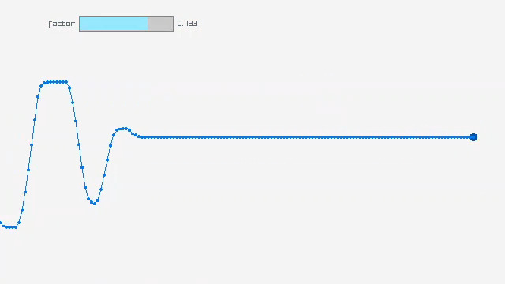

Daniel Holden's blog: https://www.daniel-holden.com/page/all
转载出处：GAMES 在线报告227

找论文
- 找方向
- 主流会议的paper session
- 找综述，精读
- 搜索“方向”相关的关键词
- 找经典论文，精读
- 综述里面被highlight的论文
- 引用非常高的论文
- 获奖论文
- 延伸
- reference：综述里（第二章）被metion的论文次之
- citation：在google里点击“被引用”
- 习惯
- 维持一个paper queue，经典论文提高优先级
- 从队首选一篇
- 把reference和citation（筛去不相关）放入队尾
- 多交流
读论文
- Quick skim
内容：看图，看视频（会议的 presentation view） 目的：对文章了解大概 时间：十分钟
- Critical reading
内容：
- Title
- Abstract
- Introduction
- discussion/limitation
目的：
- 核心问题是什么
- 核心贡献是什么？
- 大致方法是什么？有效？缺陷？验证？
- 启发
记笔记
- Summary
- Fact.
- motivafion
- contribution
- method
- evaluation
- Crifical thinking
- 批判优缺点
- Creative thinking
如何启发了我
- 想到什么idea
- 怎么improve
- 怎么generalize
- what I have learned
精读：1周1～2篇
求反馈
- 对照作者video的重点
- 对照作者总结的limitaton
- 分享，交流
转载出处：https://www.daniel-holden.com/page/perfect-tracking-springs
💡 本文主题：
- “tracks the acceleration, velocity, and position of the input animation in different proportions”能够得到比较不错的tracking效果。
- 直接的tracking在timestep改变时难以自适应，可以借鉴弹簧系统
spring_damper_exact_stiffness_damping来解决。- 弹簧系统和tracking在公式上有相通之处，通过公式推导计算出弹簧系统的关键系数，可以使弹簧系统达到与tracking相同的效果。
Perfect Tracking with Springs
Created on Jan. 25, 2023, 3:44 p.m.
If you have some animation data with discontinuities you want to remove, you might have considered tracking that animation data with some kind of spring:
✅ 为什么弹簧系统可以解决不连续性问题？因为弹簧系统中会考虑质量和惯性，因此运动（位置、速度、加速度。。。。等）都无法瞬间改变。
✅ 但是实际上animation data常常是离散数据，每一帧的运动变化都是通过差分算出来的，所以无法区分某一帧的运动数值变化到底是突变（不连续）还是只是运动变化过快（连续）。所以只能设置一个阈值，超过阈值的变化当作是突变。
This does a good job at removing the discontinuities - but the spring needs to be very stiff - meaning the discontinuities get aggressively blended out - and even worse - it never quite reproduces exactly the input signal in places where nothing is wrong.
✅ 弹簧非常stiff意味着什么呢？弹簧系数非常大，在这种情况下难以产生很快的运动变化。
✅ 为什么弹簧必须非常stiff呢？其实跟阈值限制是一个目的，就是防止物体运动变化太快。只不过阈值限制是非常暴力的一刀切，有可能产生高阶的不连续。而弹簧能保证每一阶的连续性。
🔎 使用弹簧系统来tracking的效果： https://www.daniel-holden.com/media/uploads/springs/tracking_bad.m4v
✅ 可以看出弹簧系统tracking的这样一些问题：（1）运动会有滞后 （2）跳变平滑之后难以快速跟上原始信号 （3）较快的运动变化会丢失。 ✅ 同时，弹簧系统的stiffness也比较难调整，stiffness过大，（3）会变严重。stiffness过小，（1）和（2）会变严重。
For this reason, I've always tried to avoid going down this route whenever I could, and to me, inertialization always seemed like the "correct" way of dealing with these kind of discontinuities if you knew where they occurred.
🔎 inertialization：惯性差值
However, a few years ago, my old colleague Jack Potter showed me a kind of spring that can filter animation in exactly the way we want: it can remove discontinuities smoothly while still perfectly tracking the original signal when nothing is wrong.
✅ 不只去跳变，任何以内容优化为目的的算法，都是这样的目标：在去除不好的同时尽可能地保留好的。
The trick is to make a spring that tracks the acceleration, velocity, and position of the input animation in different proportions.
In code it looks something like this:
void tracking_spring_update(
float& x,
float& v, // current velocity
float x_goal, // the position of the input animation
float v_goal, // the velocity of the input animation itself
float a_goal, // the acceleration of the input animation
float x_gain, // gain to control the strength, e.g. 0.01
float v_gain, // e.g. 0.2
float a_gain, // e.g. 1
float dt) // e.g. 60 frames per second
{
// a对v的影响方式是a*dt
v = lerp(v, v + a_goal * dt, a_gain);
v = lerp(v, v_goal, v_gain);
// x对v的影响方式是dx/dt
v = lerp(v, (x_goal - x) / dt, x_gain);
x = x + dt * v;
}
✅
xxx_goal代表原始运动（红线）的状态。x和v代表tracking moition（蓝线）的状态。
First, we blend the current velocity with the current velocity plus the acceleration of the input animation multiplied by the dt. Then, we blend this with the velocity of the input animation itself. Finally, we blend this with a velocity that pulls us toward the position of the input animation.
✅ 根据代码计算出每一项对下一帧速度的影响度：
| 当前速度 | v | a_gain * v_gain * x_gain |
| 原始轨迹的加速度 | a_goal * dt | (1-a_gain) * v_gain * x_gain) |
| 原始轨迹的速度 | v_goal | (1-v_gain * x_gain) |
| 原始轨迹的位置 | (x_goal - x)/dt | (1-x_gain) |
For each of these blends we can use a gain to control the strength. For perfect tracking, we will want to set the acceleration gain to 1, the velocity gain to something like 0.2, and the position gain to something quite small such as 0.01 (when running at 60 frames per second).
✅ 从建议的参数可以看出，tracking motion主要受原始轨迹的位置变化的影响，但不太关心原始轨迹的加速度。
This spring will need to be fed the acceleration, velocity, and position of the input signal. The easiest way to get these is by finite difference:
float tracking_target_acceleration(
float x_next,
float x_curr,
float x_prev,
float dt)
{
return (((x_next - x_curr) / dt) - ((x_curr - x_prev) / dt)) / dt;
}
float tracking_target_velocity(
float x_next,
float x_curr,
float dt)
{
// 后向差分
return (x_next - x_curr) / dt;
}
If we know there is a discontinuity in this signal, we know the values computed by this finite difference will not be good (at least the acceleration and velocity targets wont be) - so we just ignore them for those time steps and only blend the velocity with values we know are good:
✅ 当原始轨迹的v和a不正确时，就不要受它们的影响了。可是怎么知道v和a是否正确呢？
void tracking_spring_update_no_acceleration(
float& x,
float& v,
float x_goal,
float v_goal,
float x_gain,
float v_gain,
float dt)
{
v = lerp(v, v_goal, v_gain);
v = lerp(v, (x_goal - x) / dt, x_gain);
x = x + dt * v;
}
void tracking_spring_update_no_velocity_acceleration(
float& x,
float& v,
float x_goal,
float x_gain,
float dt)
{
v = lerp(v, (x_goal - x) / dt, x_gain);
x = x + dt * v;
}
This allows the spring to ignore the discontinuity and naturally converge back onto the input stream, tracking it perfectly:
🔎 https://www.daniel-holden.com/media/uploads/springs/tracking_good.m4v
If we don't know where the discontinuities are in the input signal we have two options - we can try to detect them and ignore them based on some kind of heuristic - or we can clip whatever we get to some maximum and minimum velocity and acceleration. Clipping can still sometimes give us a nasty jump when discontinuities occur but works okay given the imperfect situation we might be in:
✅ 因此，当发现原始运动的v和a不合理时，有两种处理方法：（1）ignore，只参考原始动作的位置信息。（2）clip，截断。
🔎 https://www.daniel-holden.com/media/uploads/springs/tracking_clamp.m4v
This can be useful when our input signal may jump around in hard to specify ways or when it is coming from some black box we can't control.
One important thing to note here is that this code is not in any way robust to varying timesteps! The use of these gains will give us very different results if we tick at different rates:
✅ timestep比较大的时候，似乎要花很久才能在跳变之后追上原始信号。
🔎 https://www.daniel-holden.com/media/uploads/springs/tracking_gain_dt.m4v
We can improve things somewhat by switching lerp to damper_exact and using half-lives to control the blending (in this case I use 0.0 for the acceleration halflife, 0.05 for the velocity halflife and 1.0 for the position halflife).
❓
damper_exact是什么？没有找到相关材料。
void tracking_spring_update_improved(
float& x,
float& v,
float x_goal,
float v_goal,
float a_goal,
float x_halflife,
float v_halflife,
float a_halflife,
float dt)
{
v = damper_exact(v, v + a_goal * dt, a_halflife, dt);
v = damper_exact(v, v_goal, v_halflife, dt);
v = damper_exact(v, (x_goal - x) / dt, x_halflife, dt);
x = x + dt * v;
}
This version is certainly far from dt-invariant either, but feels a bit better than before to me.
❓ dt-invariant version是指什么？
🔎 https://www.daniel-holden.com/media/uploads/springs/tracking_damper_dt.m4v
Although basically stable, I would warn against ticking this spring at a variable timestep. Other than that I think it is pretty neat.
If anyone wants to go through the maths to try and derive an exact, dt-invariant version of this spring that would be awesome - or if anyone knows if this spring exists under a different name in engineering/control theory I would love to know!
That's all for now.
Appendix: Exact Tracking Spring
So after a little discussion on Twitter it seemed that (although there were some good suggestions), no one could identify exactly what kind of spring this was. A couple of the replies however did seed some ideas in my head and I decided to try and see if I could derive a dt-invariant version of this spring by playing around with the equations. Spoiler: it turns out this spring is equivalent to our normal spring-damper with specifically tuned stiffness, damping, goal position, and goal velocity.
To see how this works, we need to break down the tracking spring velocity equation into its different parts.
First, we have the continuation of the existing velocity, which will end up scaled by some amount depending on our gains. We will denote this scaling using some variable \( \theta_0 \):
\begin{align*} v_{t} &= \theta_0 \cdot v_t + ... \end{align*}
Next, we have the contribution from the acceleration of the signal being tracked \( g_a \). This is multiplied by the delta time \( dt \), and again scaled by some amount depending on the gains. Similarly to before, we'll denote this as \( \theta_1 \):
\begin{align*} v_{t} &= \theta_0 \cdot v_t + dt \cdot \theta_1 \cdot g_a + ... \end{align*}
Then, we have the contribution from the velocity of the signal being tracked \( g_v \), which we will multiply by the delta time \( dt \) and our third scaling variable \( \theta_2 \):
\begin{align*} v_{t} &= \theta_0 \cdot v_t + dt \cdot \theta_1 \cdot g_a + dt \cdot \theta_2 \cdot g_v + ... \end{align*}
Finally, we have the term that pulls the spring toward the position of the signal being tracked \( g_x \). Like the others, this we will scale by the delta time \( dt \) and another variable \( \theta_3 \):
\begin{align*} v_{t} &= \theta_0 \cdot v_t + dt \cdot \theta_1 \cdot g_a + dt \cdot \theta_2 \cdot g_v + dt \cdot \theta_3 \cdot (g_x - x_{t}) \end{align*}
✅ 最后一项应该除以dt，而不是乘 ✅ 参考上面的表格
| 当前速度 | v | theta_0 = a_gain * v_gain * x_gain |
| 原始轨迹的加速度 | a_goal * dt | theta_1 = (1-a_gain) * v_gain * x_gain) |
| 原始轨迹的速度 | v_goal | theta_2 = (1-v_gain * x_gain) |
| 原始轨迹的位置 | (x_goal - x)/dt | theta_3 = (1-x_gain) |
We can think of this as simply another formulation of our tracking spring using a different set of variables. What we need to do now is find a way to compute these values \( \theta_0 \), \( \theta_1 \), \( \theta_2 \), \( \theta_3 \) from our gains. The way we are going to do this is to kind of work backwards to find assignments of these that reflect the behavior we expect from the lerp formulation.
First, what are the values of \( \theta_0 \) and \( \theta_1 \) according to our acceleration gain \( \alpha_a \)? This one is simple - the acceleration gain \( \alpha_a \) doesn't affect the scale of the existing velocity, meanwhile when \( \alpha_a = 1 \) we expect to have the full contribution from \( g_a \) - effectively \( \theta_1 = \alpha_a \) in this case:
\begin{align*} \theta_0 &= 1 \\ \theta_1 &= \alpha_a \ \end{align*}
❓ 这里似乎跟我理解的不太一样，可能要先搞清楚
damper_exact。
Next, what happens when we introduce the velocity gain \( \alpha_v \)? As well as scaling our velocity target \( g_v \) up such that \( dt \cdot \theta_2 = 1 \) when \( \alpha_v = 1 \), it will also scale down the values of \( \theta_0 \) and \( \theta_1 \) in equal proportion.
\begin{align*} \theta_0 &= 1 - \alpha_v \\ \theta_1 &= \alpha_a \cdot (1 - \alpha_v) \\ \theta_2 &= \frac{\alpha_v}{dt} \end{align*}
Finally, we need to account for our position gain \( \alpha_x \). When \( \alpha_x = 1 \) we expect the result to be pulled directly onto the tracking target \( g_x \), which means \( \alpha_3 = \tfrac{\alpha_x}{dt^2} \). Also, just like the velocity gain, the position gain will scale down the other terms as it grows larger:
\begin{align*} \theta_0 &= (1 - \alpha_v) \cdot (1 - \alpha_x) \\ \theta_1 &= \alpha_a \cdot (1 - \alpha_v) \cdot (1 - \alpha_x) \\ \theta_2 &= \frac{\alpha_v \cdot (1 - \alpha_x)}{dt} \\ \theta_3 &= \frac{\alpha_x}{dt^2} \end{align*}
But why is that useful? Well our goal now is going to be to rearrange our equation with \( \theta_0 \), \( \theta_1 \), \( \theta_2 \) and \( \theta_3 \) to put it in a similar form to our spring-damper velocity equation. If we can find a matching formulation then we can use the time-invariant derivation we've already worked out.
❓ spring-damper velocity equation
First let's re-arrange our spring-damper velocity equation a bit, where \( s = stiffness \), \( d = damping \), \( g \) is our goal position, and \( q \) is our goal velocity:
✅ stiffness: 让弹簧快速回到目标位置
✅ damping：让速度变化不要太快
\begin{align*} v_t = v_t + dt \cdot s \cdot (g - x_t) + dt \cdot d \cdot (q - v_t) \end{align*}
First we'll multiply out the right-most term:
\begin{align*} v_t = v_t + dt \cdot s \cdot (g - x_t) + dt \cdot d \cdot q - dt \cdot d \cdot v_t \end{align*}
Then, we can re-factorize to put the single velocity term along with the rightmost term to get this:
\begin{align*} v_t = dt \cdot s \cdot (g - x_t) + dt \cdot d \cdot q + (1 - dt \cdot d) \cdot v_t \end{align*}
✅ 重新组合为当前速度项、目标速度项、目标位置项、目标加速度项（这一项没有）
Now, let's take our other equation...
\begin{align*} v_{t} &= \theta_0 \cdot v_t + dt \cdot \theta_1 \cdot g_a + dt \cdot \theta_2 \cdot g_v + dt \cdot \theta_3 \cdot (g_x - x_{t}) \end{align*}
... and factorize out the terms containing \( \theta_1 \) and \( \theta_2 \) so they share the same \( dt \):
\begin{align*} v_{t} &= \theta_0 \cdot v_t + dt \cdot \theta_1 \cdot g_a + dt \cdot \theta_2 \cdot g_v + dt \cdot \theta_3 \cdot (g_x - x_{t}) \\ v_{t} &= dt \cdot \theta_3 \cdot (g_x - x_{t}) + dt \cdot (\theta_1 \cdot g_a + \theta_2 \cdot g_v) + \theta_0 \cdot v_t \end{align*}
Aha! If we look carefully we can see some matches. For the first term we have \( s = \theta_3 \), and \( g = g_x \). For the second term we have \( d \cdot q = \theta_1 \cdot g_a + \theta_2 \cdot g_v \). And for the third term we have \( 1 - dt \cdot d = \theta_0 \). While the first two equations give us direct solutions, the second two will require a little re-arranging as we need to solve for \( d \) and \( q \).
We can solve for \( d \) first:
\begin{align*} 1 - dt \cdot d &= \theta_0 \\ dt \cdot d &= 1 - \theta_0 \\ d &= \frac{1 - \theta_0}{dt} \end{align*}
Which we can then use to solve for \( q \)
\begin{align*} d \cdot q &= \theta_1 \cdot g_a + \theta_2 \cdot g_v \\ q &= \frac{\theta_1 \cdot g_a + \theta_2 \cdot g_v}{d} \end{align*}
And with that we have our spring-damper parameters \( s \), \( d \), \( g \), \( q \), computed from our tracking spring parameters \( \theta_0 \), \( \theta_1 \), \( \theta_2 \) and \( \theta_3 \):
\begin{align*} s &= \theta_3 \\ d &= \frac{1 - \theta_0}{dt} \\ g &= g_x \\ q &= \frac{\theta_1 \cdot g_a + \theta_2 \cdot g_v}{d} \\ \end{align*}
Now all that remains is to plug these parameters into the exact spring damper equation we already derived and we are done. Here it is implemented in C++, where gain_dt is the timestep which we are emulating running our gains at:
void tracking_spring_update_exact(
float& x,
float& v,
float x_goal,
float v_goal,
float a_goal,
float x_gain,
float v_gain,
float a_gain,
float dt,
float gain_dt)
{
float t0 = (1.0f - v_gain) * (1.0f - x_gain);
float t1 = a_gain * (1.0f - v_gain) * (1.0f - x_gain);
float t2 = (v_gain * (1.0f - x_gain)) / gain_dt;
float t3 = x_gain / (gain_dt*gain_dt);
float stiffness = t3;
float damping = (1.0f - t0) / gain_dt;
float spring_x_goal = x_goal;
float spring_v_goal = (t2*v_goal + t1*a_goal) / ((1.0f - t0) / gain_dt);
spring_damper_exact_stiffness_damping(
x,
v,
spring_x_goal,
spring_v_goal,
stiffness,
damping,
dt);
}
And this is what it looks like in action.
🔎 https://www.daniel-holden.com/media/uploads/springs/tracking_exact.m4v
In terms of dt-invariance definitely much better than what we had before!
However, one thing you've probably noticed about this version is that it no longer tracks the input signal pixel perfectly. This is because the call to spring_damper_exact does not perfectly emulate what you would get evaluating the spring-damper with discrete ticks at a rate of gain_dt - which is what we are assuming when we compute our spring parameters. I think if we were to set gain_dt to a smaller value and tweak the gains we would get better tracking. Alternatively, we could switch to the normal integration based method when running at the framerate specified by gain_dt.
❓ the spring-damper with discrete ticks 这句话怎么理解？
❓ 什么是normal integration based method？
Another thing to note is that this derivation assumes that the target position, velocity and acceleration coming from the input signal are fixed over the full timestep. This means that if you make the \( dt \) very large and your signal becomes very coarse the behavior of this spring will be different to what you would get with smaller timesteps. In other words, this dt-invariant derivation becomes less and less effective if the tracking signal is changing quickly.
❗ 这种推导假设来自输入信号的目标位置、速度和加速度在整个时间步长上是固定的。
✅ 因此timestep不能太大。
Nonetheless, if you do have a timestep that varies, I think this version is still is far, far better than relying on the version we had before.
The other variations we need where we don't have acceleration or velocity targets have pretty similar derivations so I wont go through the maths, but in C++ they can be implemented as follows:
✅ 没有
a_goal和v_goal的情况下，
第一步：\(\theta_1\)和\(\theta_2\)就不存在了，重新推导出\(\theta_0\)和\(\theta_3\)
第二步：需要\(\theta_1\)和\(\theta_2\)的地方用0代替。
void tracking_spring_update_no_acceleration_exact(
float& x,
float& v,
float x_goal,
float v_goal,
float x_gain,
float v_gain,
float dt,
float gain_dt)
{
float t0 = (1.0f - v_gain) * (1.0f - x_gain);
float t2 = (v_gain * (1.0f - x_gain)) / gain_dt;
float t3 = x_gain / (gain_dt*gain_dt);
float stiffness = t3;
float damping = (1.0f - t0) / gain_dt;
float spring_x_goal = x_goal;
float spring_v_goal = t2*v_goal / ((1.0f - t0) / gain_dt);
spring_damper_exact_stiffness_damping(
x,
v,
spring_x_goal,
spring_v_goal,
stiffness,
damping,
dt);
}
void tracking_spring_update_no_velocity_acceleration_exact(
float& x,
float& v,
float x_goal,
float x_gain,
float dt,
float gain_dt)
{
float t0 = 1.0f - x_gain;
float t3 = x_gain / (gain_dt*gain_dt);
float stiffness = t3;
float damping = (1.0f - t0) / gain_dt;
float spring_x_goal = x_goal;
float spring_v_goal = 0.0f;
spring_damper_exact_stiffness_damping(
x,
v,
spring_x_goal,
spring_v_goal,
stiffness,
damping,
dt);
}
And that is about it! All the code for this article can be found on github. I hope you find it useful.
转载出处：https://www.daniel-holden.com/page/cubic-interpolation-quaternions
Cubic Interpolation of Quaternions
Created on April 25, 2023, 9:01 a.m.
If you've ever googled "cubic interpolation of quaternions" or looked up the "SQUAD" algorithm you'd be forgiven for thinking that understanding how to do smooth, cubic interpolation of quaternions requires some really advanced mathematics.
🔎 SQUAD： https://blog.csdn.net/weixin_52398420/article/details/111990639
But it really doesn't need to be that complicated. And if we understand well the algorithm for normal cubic interpolation (and more specifically, Catmull-Rom cubic interpolation), the quaternion version pretty much falls into our laps.
Whenever the subject of cubic interpolation and splines comes up it would be wrong of me not to recommend the absolute master-class that is Freya Holmér's spline videos - watching these should give you a great intuition not just about the process we are going to go through in this article, but about splines in general.
Hermite Curve Interpolation
Forget about quaternions for now. Instead, we're going to start with the following more simple problem: if we have two values at 0 and 1, and gradients for those values at 0 and 1, how can we produce a smooth interpolation which passes through those values with the given gradients?
cubic interpolation drawn
The solution is to fit a cubic polynomial function \( f \) to the two points and their gradients. In this case we have four constraints...
\begin{align*} f(0) &= p_0 \\ f(1) &= p_1 \\ f'(0) &= v_0 \\ f'(1) &= v_1 \\ \end{align*}
...and four unknowns \( a \), \( b \), \( c \), and \( d \).
\begin{align*} f(x) &= a\ x^3 + b\ x^2 + c\ x + d \\ f'(x) &= 3\ a\ x^2 + 2\ b\ x + c \\ \end{align*}
✅ 假设为三次曲线，4个约束和4个未知量，列方程组解出未知量。
So we just need to plug our different equations into each other and solve for \( a \), \( b \), \( c \), and \( d \).
First we solve for \( d \) using our first constraint \( f(0) = p_0 \)...
\begin{align*} p_0 &= a\ 0 + b\ 0 + c\ 0 + d \\ d &= p_0 \\ \end{align*}
Then we solve for \( c \) using our third constraint \( f'(0) = v_0 \)...
\begin{align*} v_0 &= 3\ a\ 0 + 2\ b\ 0 + c \\ c &= v_0 \\ \end{align*}
Then we can solve for \( b \) using our other two constraints and our solutions for \( d \) and \( c \)...
\begin{align*} p_1 &= a\ 1 + b\ 1 + c\ 1 + d \\ a &= p_1 - b - v_0 - p_0 \\ &\\ v_1 &= 3\ a\ 1 + 2\ b\ 1 + c \\ v_1 &= 3\ (p_1 - b - v_0 - p_0) + 2\ b + v_0 \\ v_1 &= 3\ p_1 - 3\ b - 3\ v_0 - 3\ p_0 + 2\ b + v_0 \\ b &= 3\ p_1 - 2\ v_0 - 3\ p_0 - v_1 \\ \end{align*}
And finally we can solve for \( a \)...
\begin{align*} a &= p_1 - b - v_0 - p_0 \\ a &= p_1 - (3\ p_1 - 2\ v_0 - 3\ p_0 - v_1) - v_0 - p_0 \\ a &= v_0 + 2\ p_0 + v_1 - 2\ p_1 \\ \end{align*}
We can plot this cubic function to verify that it passes through the given points, and with the correct gradients:
cubic interpolation test
Nice! If we expand the cubic function with our values for \( a \), \( b \), \( c \), and \( d \) substituted, we can rearrange things such that our result is expressed in terms of \( p_0 \), \( p_1 \), \( v_0 \) and \( v_1 \) directly (rather than the polynomial coefficients):
\begin{align*} f(x) &= (v_0 + 2\ p_0 + v_1 - 2\ p_1)\ x^3 + (3\ p_1 - 2\ v_0 - 3\ p_0 - v_1)\ x^2 + v_0\ x + p_0 \\ f(x) &= v_0\ x^3 + 2\ p_0\ x^3 + v_1\ x^3 - 2\ p_1\ x^3 + 3\ p_1\ x^2 - 2\ v_0\ x^2 - 3\ p_0\ x^2 - v_1\ x^2 + v_0\ x + p_0 \\ f(x) &= p_0\ (2\ x^3 - 3\ x^2 + 1) + p_1\ (3\ x^2 - 2\ x^3) + v_0\ (x^3 - 2\ x^2 + x) + v_1\ (x^3 - x^2) \\ \end{align*}
This is useful because usually \( x \) is a scalar, while \( p_0 \), \( p_1 \), \( v_0 \) and \( v_1 \) can often be 3d vectors. For example, we can implement a version that works on 3d vectors in C++ as follows, where x is our interpolating value between 0 and 1:
✅ 如果p和v是3D的，那么参数a,b,c,d也是3D的。12个约束与12个未知量。
vec3 hermite_basic(float x, vec3 p0, vec3 p1, vec3 v0, vec3 v1)
{
float w0 = 2*x*x*x - 3*x*x + 1;
float w1 = 3*x*x - 2*x*x*x;
float w2 = x*x*x - 2*x*x + x;
float w3 = x*x*x - x*x;
return w0*p0 + w1*p1 + w2*v0 + w3*v1;
}
(Aside: Notice how w0 and w1 are both versions of smoothstep - isn't that cool!)
Since we have the derivative of our cubic polynomial function, we can also compute the gradient/velocity of the interpolated result and get our function to output that too:
void hermite(
vec3& pos,
vec3& vel,
float x,
vec3 p0,
vec3 p1,
vec3 v0,
vec3 v1)
{
float w0 = 2*x*x*x - 3*x*x + 1;
float w1 = 3*x*x - 2*x*x*x;
float w2 = x*x*x - 2*x*x + x;
float w3 = x*x*x - x*x;
float q0 = 6*x*x - 6*x;
float q1 = 6*x - 6*x*x;
float q2 = 3*x*x - 4*x + 1;
float q3 = 3*x*x - 2*x;
pos = w0*p0 + w1*p1 + w2*v0 + w3*v1;
vel = q0*p0 + q1*p1 + q2*v0 + q3*v1;
}
Which looks something like this:
cubic interpolation full
One last adjustment to this formula is to effectively translate our points such that \( p_0 = 0 \). Then, once we have the interpolated value, translate it back up by adding the original value of \( p_0 \):
❓ 这一步不知道有什么用。
void hermite_alt(
vec3& pos, // 求x时刻的位置
vec3& vel, // 求x时刻的速度
float x, // x 为[0,1]区间的值
vec3 p0, // x=0时的位置
vec3 p1, // x=1时的位置
vec3 v0, // x=0时的速度
vec3 v1) // x=1时的速度
{
vec3 p1_sub_p0 = p1 - p0;
float w1 = 3*x*x - 2*x*x*x;
float w2 = x*x*x - 2*x*x + x;
float w3 = x*x*x - x*x;
float q1 = 6*x - 6*x*x;
float q2 = 3*x*x - 4*x + 1;
float q3 = 3*x*x - 2*x;
pos = w1*p1_sub_p0 + w2*v0 + w3*v1 + p0;
vel = q1*p1_sub_p0 + q2*v0 + q3*v1;
}
This might seem like a pointless extra step, but this formulation with the first point at zero actually simplifies things in a way which will be really useful when we start dealing with quaternions.
What we've derived is called Hermite Cubic Interpolation, and is essentially the mathematics used for a single segment of a Hermite Spline, which will be a key part of doing cubic interpolation of quaternions.
Catmull-Rom Cubic Interpolation
If we have a series of points and their gradients/velocities, we can use the previous equation to make a smooth interpolation that passes through them. But what if we just have points? With no velocities or gradients associated with them? Can we still use Hermite Curve Interpolation?
✅ 把这些点看作是关键帧，所谓make a smooth interpolation是指在关键帧之间增加一些平滑点形成的平滑曲线，而不是把这个点本身平滑掉。
Yes! The trick is to take four points instead of two, and to use the central difference to "estimate" a gradient/velocity to associate with each of the middle two points. Then, once we have these velocities we can use Hermite Curve Interpolation to interpolate the intermediate values.
✅ 已知p0, p1, p2, p3，求p1与p2之间的插值
In code it looks something like this:
void catmull_rom(
vec3& pos,
vec3& vel,
float x,
vec3 p0,
vec3 p1,
vec3 p2,
vec3 p3)
{
vec3 v1 = ((p1 - p0) + (p2 - p1)) / 2;
vec3 v2 = ((p2 - p1) + (p3 - p2)) / 2;
return hermite(pos, vel, x, p1, p2, v1, v2);
}
You can see that we compute the central difference for these two middle points using the average of the forward and backward differences. Then, we pass these estimated velocities to our Hermite Curve Interpolation function to get the final interpolated value! The result is something like this:
catmull rom spline
And that's how we use a Catmull-Rom spline to do cubic interpolation. Here is what it looks like in 3d:
🔎 https://www.daniel-holden.com/media/uploads/CubicInterpolation/catmull_rom.m4v
Quaternion Catmull-Rom Cubic Interpolation
Now that we understand exactly what is going on (and what each different value and computation represents) we are ready to adapt our equations to work with quaternions instead of positions.
First we will tackle the Hermite Cubic Interpolation function, and there are a few changes we need to make to get this formula to work for quaternions:
- Instead of linear velocities, we need to use angular velocities.
- When we compute the difference between p0 and p1 to put p0 at zero, we are instead going to take the quaternion difference.
- Once we have this quaterion difference, we are going to convert it into the scaled-angle-axis space so that it makes sense to mix it with angular velocities.
- Once we have added everything together, we need to convert the result back to a quaternion. And instead of adding back the original value of p0 we will use quaternion multiplication.
❓ 什么是scaled-angle-axis？
In code it looks like this:
void quat_hermite(
quat& rot, // 求x时刻的旋转
vec3& vel, // 求x时刻的旋转速度
float x, // x 为[0,1]区间的值
quat r0, // x=0时的旋转
quat r1, // x=1时的旋转
vec3 v0, // x=0时的旋转速度
vec3 v1) // x=0时的旋转速度
{
float w1 = 3*x*x - 2*x*x*x;
float w2 = x*x*x - 2*x*x + x;
float w3 = x*x*x - x*x;
float q1 = 6*x - 6*x*x;
float q2 = 3*x*x - 4*x + 1;
float q3 = 3*x*x - 2*x;
// 先求 quaterion difference，然后转化为scaled-angle-axis表示
vec3 r1_sub_r0 = quat_to_scaled_angle_axis(quat_abs(quat_mul_inv(r1, r0)));
// 对旋转插值之后再转回四元数表示
rot = quat_mul(quat_from_scaled_angle_axis(w1*r1_sub_r0 + w2*v0 + w3*v1), r0);
vel = q1*r1_sub_r0 + q2*v0 + q3*v1;
}
❓ 仍然没有看出把r1-r0提取出来的作用
Next, we can tackle our Catmull-Rom Cubic Interpolation function. This time there are fewer adjustments. All we really need to do is convert our velocity computations via finite difference, into angular velocity computations via finite difference (as described in my previous article on angular velocity)...
void quat_catmull_rom(
quat& rot,
vec3& vel,
float x,
quat r0,
quat r1,
quat r2,
quat r3)
{
vec3 r1_sub_r0 = quat_to_scaled_angle_axis(quat_abs(quat_mul_inv(r1, r0)));
vec3 r2_sub_r1 = quat_to_scaled_angle_axis(quat_abs(quat_mul_inv(r2, r1)));
vec3 r3_sub_r2 = quat_to_scaled_angle_axis(quat_abs(quat_mul_inv(r3, r2)));
// finite difference
vec3 v1 = (r1_sub_r0 + r2_sub_r1) / 2;
vec3 v2 = (r2_sub_r1 + r3_sub_r2) / 2;
return quat_hermite(rot, vel, x, r1, r2, v1, v2);
}
And that's it! While some of these steps might not be 100% obvious without thinking about it a little, as long as you understand the relationship between angular velocities and quaternions, I don't think there is anything unexpected going on.
Here is what it looks like in our little 3d environment:
🔎 https://www.daniel-holden.com/media/uploads/CubicInterpolation/quat_catmull_rom.m4v
Raw Quaternion Cubic Interpolation
If you are interpolating a series of quaternions which are sequentially pretty similar to each other, and have been "unrolled" so that there are no sudden discontinuities there is an even easier way to do cubic interpolation of quaternions, which is to just do the interpolation directly in the 4d quaternion space, treating the quaternions as 4d vectors, and re-normalize the result.
This can be faster and will produce practically identical results when your quaternions are similar. I see this as like the difference between using slerp and nlerp for linear interpolation.
One thing to be careful of in this setup is that if you are treating the quaternions as raw 4d vectors then the "velocities" you get out of the cubic interpolation will not be angular velocities, but velocities in the raw 4d quaternion space.
❓ angular velocities与velocities in the raw 4d quaternion space是什么关系？
If we want to convert these "velocities" in the 4d quaternion space into actual angular velocities we can do so using the following function:
vec3 quat_delta_to_angular_velocity(quat qref, quat qdelta)
{
quat a = quat_mul_inv(qdelta, qref);
return 2.0f * vec3(a.x, a.y, a.z);
}
Here qdelta is the scaled raw difference between two quaternions in the 4d space and qref is a quaternion representing the rotation at which this difference was taken (i.e. one of the two quaternions used to compute the difference or the rotation along the spline associated with this difference).
❓ qref是什么？
This gives a result equal to the linear approximation of the angular velocity.
Conclusion
When it comes to animation data, I think most people believe that doing cubic interpolation of rotations is a waste of CPU cycles. Yes - sampling four poses is more expensive than two and the mathematics involved are more expensive too - but cubic interpolation really can make a visual difference - in particular when playing animation in slow-motion.
❓ sampling是用来采样关键帧？
In addition, compared to linear interpolation, cubic interpolation gives velocities that change smoothly in-between frames, which can prevent aliasing effects when further processing the data. For example, sampling velocities for a motion-matching database via linear interpolation at a rate higher than the original animation data will produce consecutive entries with the same velocities - which can look like a bug when it comes to inspect the data and can affect the result of downstream algorithms such as PCA.
❓ 采样会需要插值。为什么线性插值会导致速度不变？速度不变会产生什么Artifacts？PCA怎么成了motion matching的downstream？
🔎 https://www.daniel-holden.com/media/uploads/CubicInterpolation/animation_interpolation.m4v
Here is another concrete example: while FIFA 21 has undoubtedly some of the best, most sophisticated, and most realistic animation in the world of video games, the linear interpolation between frames, and the velocity discontinuity this introduces during slow-mo is something that cannot be un-seen.
Edit: FIFA 23 on the other hand does use a similar technique to the one described here. I think the results speak for themselves!
Either way, I hope this post has shed some light on cubic interpolation of quaternions. And as always, thanks for reading!
Appendix: Cubic Interpolation of Scales
Those of you who have read my article on scalar velocity will know that we can follow a very similar process to derive a method of cubic interpolation of scales.
Again, we can start with a function for a hermite spline, this time taking scalar velocities as input (for this code, using the natural base).
void scale_hermite(
vec3& scl,
vec3& svl,
float x,
vec3 s0,
vec3 s1,
vec3 v0,
vec3 v1)
{
float w1 = 3*x*x - 2*x*x*x;
float w2 = x*x*x - 2*x*x + x;
float w3 = x*x*x - x*x;
float q1 = 6*x - 6*x*x;
float q2 = 3*x*x - 4*x + 1;
float q3 = 3*x*x - 2*x;
vec3 s1_sub_s0 = log(s1 / s0);
scl = exp(w1*s1_sub_s0 + w2*v0 + w3*v1) * s0;
svl = q1*s1_sub_s0 + q2*v0 + q3*v1;
}
❓ 为什么用log和exp?
Then, the catmull-rom derivation follows in exactly the same way - with scalar velocities computed as shown previously.
void scale_catmull_rom(
vec3& scl,
vec3& svl,
float x,
vec3 s0,
vec3 s1,
vec3 s2,
vec3 s3)
{
vec3 s1_sub_s0 = log(s1 / s0);
vec3 s2_sub_s1 = log(s2 / s1);
vec3 s3_sub_s2 = log(s3 / s2);
vec3 v1 = (s1_sub_s0 + s2_sub_s1) / 2;
vec3 v2 = (s2_sub_s1 + s3_sub_s2) / 2;
return scale_hermite(scl, svl, x, s1, s2, v1, v2);
}
And this is what it looks like in action:
https://www.daniel-holden.com/media/uploads/CubicInterpolation/scale_catmull_rom.m4v
转载出处：https://www.daniel-holden.com/page/creating-looping-animations-motion-capture
Creating Looping Animations from Motion Capture
Created on Sept. 19, 2022, 11:01 a.m.
Today I'd like to talk about a couple of different ideas for how to automatically create looping animations from motion capture data.
But first, a little bit of philosophical discussion - because some of you reading this might be thinking "but Dan, aren't you trying to move animation tech away from the use of small, looped animation clips?".
Well the truth is this: the way I feel about looping animations is pretty much the way I feel about tiling textures. That yes - if done poorly they can look bad - and when there is a short repeat period with no added details on top the repetition becomes painfully obvious in a way that destroys both realism and immersion. But I've sort of been convinced that looping/tiling is a powerful form of proceduralism we should exploit in games - and that if we want to create worlds with a level of perceived detail that comes close to reality (and more importantly, fit those worlds in RAM or on our hard drives), it may well be an ally rather than an enemy.
Nonetheless, whenever a discussion leads down the path of "we must have the ability to individually tweak each of the 27 frames of locomotion in the main run cycle otherwise we risk creating an experience too jarring for the player during the hours of gameplay they will see it repeated" I cannot help but think animation tech is still somehow stuck in the days of this.
{kind=link}
✅ loop不仅是一小段动画的不段循环，也可以看作是小样本生成任务。只需要一小段reference motion，就可以生成无限时长的丰富但又具有reference motion特点的动作。由于reference motion可以精心制作的高质量数据，生成出的序列也是高质量的。
Longer loops definitely help, as does adding procedural details on top, or a variety system which random selects different animations over time. Either way, the one thing I'm not going to be convinced of is that the solution to making looping animations look good is the animation equivalent of pixel-polishing!
Okay - rant indulged... onto the technical stuff...
If we have a clip of animation we want to make loop there are essentially two things we need to do: 1. make the first and last frame of the animation the same. 2. ensure the velocity of the first frame and last frame are similar enough that we don't have a visual discontinuity.
✅ 看样子，本文的目的不是小样本生成。而是一段动作序列的首尾拼接，达到序列级的循环。
方式一： inertialization
Luckily, one of my favorite tools in animation programming can be used for exactly this: inertialization. And while most often this is used for stitching together two different animations at runtime, we can also use it offline to stitch an animation to itself creating what is essentially a looped animation.
🔎 inertialization：https://caterpillarstudygroup.github.io/ImportantArticles/Spring-It-OnTheGameDeveloper'sSpring-Roll-Call.html#inertialization
if we have two different streams of animation we wish to switch between, at the point of transition we record the offset between the currently playing animation and the one we want to switch to. Then, we switch to this new animation but add back the previously recorded offset. We then decay this offset smoothly toward zero over time - in this case using a spring damper.
✅ 用spring damper来生成offset，可使最终的轨迹和速度都是连续的。
For example, given something like the following:

We can take the difference between the first and last frame of animation, as well as the difference in velocity, and then add back this difference as an offset, decayed over time by something like a critically damped spring:
✅ 用critically damped spring的方式生成difference的系数，加到曲线上。
🔎 critically damped spring: https://caterpillarstudygroup.github.io/ImportantArticles/Spring-It-OnTheGameDeveloper'sSpring-Roll-Call.html#over-under-and-critical-damping✅ 用damper spring来实现offset decay涉及到大量的公式以及参数的求解。critically damped spring是其中一种场景，这种场景下参数w = 0。
✅ w is the frequency of oscillations。w = 0代表震荡频率不会发生变化。

In this case I've added this offset to the front of the animation, but we could add it to the back instead:

We can also distribute the offset over both sides of the clip - by applying some amount of the offset to the front of the animation, and some amount of it to the back in the opposite direction. We can even have individual half-lives for each side if we want to, or account for the velocity and position discontinuities in different ratios at the back and front:

To implement this in code, first we need to compute the differences for the start and end frames:
✅ 上面的例子是在单点上做位置的混合。下面代码是应用到角色上，对每个角色的关节做混合。一个关节的状态包含位置、速度、旋转、旋转速度。
❓ 位置和速度是global的还是相对于父的？旋转我认为是相对于父的。位置应该是全局的，因为角色的joint offset是不变的。但是从代码上看，似乎取位置和取速度的方法是一样的。
void compute_start_end_positional_difference(
slice1d<vec3> diff_pos,
slice1d<vec3> diff_vel,
const slice2d<vec3> pos,
const float dt)
{
// Check we have at least 2 frames of animation
assert(pos.rows >= 2);
// rows为第一维，代表不同帧。cols为第二维，代表不同关节。
// Loop over every joint
for (int j = 0; j < pos.cols; j++)
{
// Positional difference between first and last frame
diff_pos(j) = pos(pos.rows-1, j) - pos(0, j);
// Velocity difference between first and last frame
diff_vel(j) =
((pos(pos.rows-1, j) - pos(pos.rows-2, j)) / dt) -
((pos( 1, j) - pos( 0, j)) / dt);
}
}
void compute_start_end_rotational_difference(
slice1d<vec3> diff_rot,
slice1d<vec3> diff_vel,
const slice2d<quat> rot,
const float dt)
{
// Check we have at least 2 frames of animation
assert(rot.rows >= 2);
// Loop over every joint
for (int j = 0; j < rot.cols; j++)
{
// Rotational difference between first and last frame
// represented in scaled-angle-axis space
diff_rot(j) = quat_to_scaled_angle_axis(
quat_abs(quat_mul_inv(rot(rot.rows-1, j), rot(0, j))));
// Angular velocity difference between first and last frame
diff_vel(j) =
quat_differentiate_angular_velocity(
rot(rot.rows-1, j), rot(rot.rows-2, j), dt) -
quat_differentiate_angular_velocity(
rot( 1, j), rot( 0, j), dt);
}
}
Note that we convert the rotational offset into scaled-angle-axis space to allow us to treat it like a vector and combine it with angular velocities.
🔎 scaled angle axis: convert a rotation into angle-axis, take the axis, and scale it by the angle of the rotation. The result is a new 3D vector which I like to call the scaled-angle-axis representation.
✅ 速度的混合都是在scaled-angle-axis space上做的。
Then, given our inertialization function which decays the difference...
vec3 decayed_offset(
const vec3 x, // Initial Position
const vec3 v, // Initial Velocity
const float halflife,
const float dt)
{
float y = halflife_to_damping(halflife) / 2.0f;
vec3 j1 = v + x*y;
float eydt = fast_negexpf(y*dt);
return eydt*(x + j1*dt);
}
✅ 函数目的：假设当前offset = x，offset velocity = v。期望的offset 衰减速度为：经过halflife时间之后，offset衰减为offset/2。求，dt时间之后offset为多少？
🔎halflife_to_damping：https://caterpillarstudygroup.github.io/ImportantArticles/Spring-It-OnTheGameDeveloper'sSpring-Roll-Call.html#the-half-life-and-the-frequency
🔎decayed_offset：https://caterpillarstudygroup.github.io/ImportantArticles/Spring-It-OnTheGameDeveloper'sSpring-Roll-Call.html#the-critical-spring-damper
🔎fast_negexpf: https://caterpillarstudygroup.github.io/ImportantArticles/Spring-It-OnTheGameDeveloper'sSpring-Roll-Call.html#the-half-life
✅decayed_offset把offset当成x来做，所以target x = 0且Target v = 0。相当于decay_spring_damper_exact版本。
✅halflife_to_damping：根据damping系数求出offset下降到一半需要的时间。
✅fast_negexpf：相当于ln(x)函数
We can use it to compute the offset we need to apply at each frame.
void compute_inertialize_both_offsets(
slice2d<vec3> offsets,
const slice1d<vec3> diff_pos,
const slice1d<vec3> diff_vel,
const float halflife_start, // 第二段开始处的decay速度
const float halflife_end, // 第一段结束处的decay速度
const float ratio, // 第一段结束处需要调整的offset占整个offset的比例
const float dt)
{
// Check ratio of correction for start
// and end is between 0 and 1
assert(ratio >= 0.0f && ratio <= 1.0f);
// Loop over every frame
for (int i = 0; i < offsets.rows; i++)
{
// Loop over every joint
for (int j = 0; j < offsets.cols; j++)
{
offsets(i, j) =
// Decayed offset from start
decayed_offset(
ratio * diff_pos(j),
ratio * diff_vel(j),
halflife_start,
i * dt) +
// Decayed offset from end
decayed_offset(
(1.0f-ratio) * -diff_pos(j),
(1.0f-ratio) * diff_vel(j),
halflife_end,
((offsets.rows-1) - i) * dt);
}
}
}
And then apply this offset to the actual animation.
❓ 同时apply位置和旋转，怎么保证二者是兼容的？
void apply_positional_offsets(
slice2d<vec3> out,
const slice2d<vec3> pos,
const slice2d<vec3> offsets)
{
// Loop over every frame
for (int i = 0; i < pos.rows; i++)
{
// Loop over every joint
for (int j = 0; j < pos.cols; j++)
{
// Simply add on offset
out(i, j) = pos(i, j) + offsets(i, j);
}
}
}
void apply_rotational_offsets(
slice2d<quat> out,
const slice2d<quat> rot,
const slice2d<vec3> offsets)
{
// Loop over every frame
for (int i = 0; i < rot.rows; i++)
{
// Loop over every joint
for (int j = 0; j < rot.cols; j++)
{
// Convert back from scaled-angle-axis space and
// multiply on the left. This rotates the first
// frame toward the last frame.
out(i, j) = quat_mul(
quat_from_scaled_angle_axis(offsets(i, j)),
rot(i, j));
}
}
}
And this is how it looks on the character:
Unfortunately the spring-based inertializer has a problem here... if we slow down the animation we can see that there is a small discontinuity at the end of the loop. This is because even with a reasonably short half-life the exponential decay still produces some tiny residual offset at the end of the animation:
✅ offset是以指数的形式下降的，因此只会无限接近0，会存在residual offset
方式二： cubic inertialization
An inertializer with a fixed fade out time fixes this. For example, here is a basic cubic inertialization function we can use instead that decays exactly to zero by blendtime:
✅ 要求在固定帧数内完成插值
❓ cubic inertialization是什么？
vec3 decayed_offset_cubic(
const vec3 x, // Initial Position
const vec3 v, // Initial Velocity
const float blendtime,
const float dt,
const float eps=1e-8)
{
float t = clampf(dt / (blendtime + eps), 0, 1);
vec3 d = x;
vec3 c = v * blendtime;
vec3 b = -3*d - 2*c;
vec3 a = 2*d + c;
return a*t*t*t + b*t*t + c*t + d;
}
Now we can be sure our offsets will definitely be blended out in time:

Which removes the discontinuity.
方式三： linear fade
Something else we can do is spread the offset over the whole animation using a kind of linear fade rather than distributing it just at either end:

The problem here is that doing so naively introduces a velocity discontinuity. Which again is visible if we watch the loop in slow-mo:
方式四：linear face + cubic inertializers
This velocity discontinuity can be removed by again using some inertializers, but in this case using them just to blend out the velocity difference at either end:

This is then added to the linear offset:

Which in C++ looks something like this:
vec3 decayed_velocity_offset_cubic(
const vec3 v, // Initial Velocity
const float blendtime,
const float dt,
const float eps=1e-8f)
{
float t = clampf(dt / (blendtime + eps), 0, 1);
vec3 c = v * blendtime;
vec3 b = -2*c;
vec3 a = c;
return a*t*t*t + b*t*t + c*t;
}
void compute_linear_inertialize_offsets(
slice2d<vec3> offsets,
const slice1d<vec3> diff_pos,
const slice1d<vec3> diff_vel,
const float blendtime_start,
const float blendtime_end,
const float ratio,
const float dt)
{
assert(ratio >= 0.0f && ratio <= 1.0f);
// Loop over every frame
for (int i = 0; i < offsets.rows; i++)
{
// Loop over every joint
for (int j = 0; j < offsets.cols; j++)
{
offsets(i, j) =
// Initial linear offset
lerpf(
ratio,
(ratio-1.0f),
((float)i / (offsets.rows-1))) * diff_pos(j) +
// Velocity offset at start
decayed_velocity_offset_cubic(
ratio * diff_vel(j),
blendtime_start,
i * dt) +
// Velocity offset at end
decayed_velocity_offset_cubic(
(1.0f-ratio) * diff_vel(j),
blendtime_end,
((offsets.rows-1) - i) * dt);
}
}
}
Note that the velocity introduced by the linear fade needs to be accounted for when we apply the inertializers, but in this case because it's the same on both the start and the end of the animation it cancels itself out. As we will see later, if the velocity introduced by our initial offset is different at the start and end we need to account for it when setting the initial velocity of the inertializers.
❓ linear fade产生的offset是匀速运动，因此所产生的速度变化对所有帧是一致的，不影响velocity offset。
That aside, here is what this looks like on the character:
This spreads the adjustment over the whole animation which in many cases is very useful and generally looks good for short animations. However, in certain cases it introduces a kind of "drift" to the animation which might not be what we want and can introduce foot sliding:
方式五：soft fade + cubic inertializers
One idea is to limit the linear fade to just the start and end. Here we can use a little function I'm calling "softfade", to make a linear ramp that fades the offset out. The alpha parameter here can be used to adjust the "hardness" of the ramp.
❓ 既然这样，为什么要引入spread the offset over the whole animation？

Which we might implement in C++ like this:
float softfade(const float x, const float alpha)
{
return logf(1.0f + expf(alpha - 2.0f*alpha*x)) / alpha;
}
// Function using `softfade` to decay some offset
vec3 decayed_offset_softfade(
const vec3 x, // Initial Position
const float duration,
const float hardness,
const float dt)
{
return x * softfade(dt / duration, hardness);
}
// Gradient of the `softfade` function at zero
float softfade_grad_zero(const float alpha)
{
return (-2.0f * expf(alpha)) / (1.0f + expf(alpha));
}
// Gradient of the `decayed_offset_softfade`
// function with a `dt` of zero
vec3 decayed_offset_softfade_grad_zero(
const vec3 x,
const float duration,
const float hardness)
{
return x * (softfade_grad_zero(hardness) / duration);
}
This we can apply to either side of the animation for the durations we want.

Like before we need to account for the velocity discontinuity using additional inertialization - but with that the results are smooth.

In C++ the implementation could look something like this. First we need to update our function which computes the difference in position and velocity to take into account the velocity introduced by the softfade offset:
void compute_softfade_start_end_difference(
slice1d<vec3> diff_pos,
slice1d<vec3> diff_vel,
const slice2d<vec3> pos,
const float duration_start,
const float duration_end,
const float hardness_start,
const float hardness_end,
const float ratio,
const float dt)
{
assert(pos.rows >= 2);
// Loop over every joint
for (int j = 0; j < pos.cols; j++)
{
// Positional difference between first and last frame
diff_pos(j) = pos(pos.rows-1, j) - pos(0, j);
// End frame velocity (including softfade)
vec3 velocity_end =
(pos(pos.rows-1, j) - pos(pos.rows-2, j)) / dt +
decayed_offset_softfade_grad_zero(
ratio * diff_pos(j),
duration_start,
hardness_start) * dt;
// Start frame velocity (including softfade)
vec3 velocity_start =
(pos( 1, j) - pos( 0, j)) / dt +
decayed_offset_softfade_grad_zero(
(1.0f-ratio) * diff_pos(j),
duration_end,
hardness_end) * dt;
// Velocity difference between first and last frame
diff_vel(j) = velocity_end - velocity_start;
}
}
void compute_softfade_start_end_difference(
slice1d<vec3> diff_rot,
slice1d<vec3> diff_vel,
const slice2d<quat> rot,
const float duration_start,
const float duration_end,
const float hardness_start,
const float hardness_end,
const float ratio,
const float dt)
{
assert(rot.rows >= 2);
// Loop over every joint
for (int j = 0; j < rot.cols; j++)
{
// Rotational difference between first and last frame
// represented in scaled-angle-axis space
diff_rot(j) = quat_to_scaled_angle_axis(
quat_abs(quat_mul_inv(rot(rot.rows-1, j), rot(0, j))));
// End frame velocity (including softfade)
vec3 velocity_end =
quat_differentiate_angular_velocity(
rot(rot.rows-1, j), rot(rot.rows-2, j), dt) +
decayed_offset_softfade_grad_zero(
ratio * diff_rot(j),
duration_start,
hardness_start) * dt;
// Start frame velocity (including softfade)
vec3 velocity_start =
quat_differentiate_angular_velocity(
rot( 1, j), rot( 0, j), dt) +
decayed_offset_softfade_grad_zero(
(1.0f-ratio) * diff_rot(j),
duration_end,
hardness_end) * dt;
// Velocity difference between first and last frame
diff_vel(j) = velocity_end - velocity_start;
}
}
Then we can compute our softfade offset:
void compute_softfade_inertialize_offsets(
slice2d<vec3> offsets,
const slice1d<vec3> diff_pos,
const slice1d<vec3> diff_vel,
const float blendtime_start,
const float blendtime_end,
const float duration_start,
const float duration_end,
const float hardness_start,
const float hardness_end,
const float ratio,
const float dt)
{
// Loop over every frame
for (int i = 0; i < offsets.rows; i++)
{
// Loop over every joint
for (int j = 0; j < offsets.cols; j++)
{
offsets(i, j) =
// Softfade at start
decayed_offset_softfade(
ratio * diff_pos(j),
duration_start,
hardness_start,
i * dt) +
// Softfade at end
decayed_offset_softfade(
(1.0f-ratio) * -diff_pos(j),
duration_end,
hardness_end,
((offsets.rows-1) - i) * dt) +
// Velocity offset at start
decayed_velocity_offset_cubic(
ratio * diff_vel(j),
blendtime_start,
i * dt) +
// Velocity offset at end
decayed_velocity_offset_cubic(
(1.0f-ratio) * diff_vel(j),
blendtime_end,
((offsets.rows-1) - i) * dt);
}
}
}
Using this we can adjust the fade-out time to just a section of the animation to avoid too much drift.
✅ fadeout会引入drift，因此控制fadeout的范围。
Handle the root
We also need to handle the root carefully. If we want it to loop in the world space we can use any of the techniques above, however more often we only want it to loop in the character space - or to be more specific - we just want to remove any potential velocity discontinuity at the loop transition point.
What this means in practice is that we need to compute our offsets in the character space, but apply them in the world space of the first or last frame. Secondly, as we've seen before, we only need to inertialize out the difference in velocity, and add back the offset this produces.
Here is what that looks like in code:
void compute_root_inertialize_offsets(
slice2d<vec3> offsets_pos,
slice2d<vec3> offsets_rot,
const slice2d<vec3> pos,
const slice2d<quat> rot,
const float blendtime_start,
const float blendtime_end,
const float ratio,
const float dt)
{
// Check animation is at least 2 frames
assert(rot.rows >= 2 && pos.rows >= 2);
// Get root start and end rotations
quat root_start = rot( 0, 0);
quat root_end = rot(rot.rows-1, 0);
// Compute character space difference in positional velocity
vec3 pos_vel_end = quat_inv_mul_vec3(root_end,
(pos(pos.rows-1, 0) - pos(pos.rows-2, 0)) / dt);
vec3 pos_vel_start = quat_inv_mul_vec3(root_start,
(pos( 1, 0) - pos( 0, 0)) / dt);
vec3 diff_pos_vel = pos_vel_end - pos_vel_start;
// Compute character space difference in rotational velocity
vec3 rot_vel_end = quat_inv_mul_vec3(root_end,
quat_differentiate_angular_velocity(
rot(rot.rows-1, 0), rot(rot.rows-2, 0), dt));
vec3 rot_vel_start = quat_inv_mul_vec3(root_start,
quat_differentiate_angular_velocity(
rot( 1, 0), rot( 0, 0), dt));
vec3 diff_rot_vel = rot_vel_end - rot_vel_start;
// Loop over frames
for (int i = 0; i < rot.rows; i++)
{
// Root positional offset
offsets_pos(i, 0) =
// Velocity offset at start
decayed_velocity_offset_cubic(
ratio * quat_mul_vec3(root_start, diff_pos_vel),
blendtime_start,
i * dt) +
// velocity offset at end
decayed_velocity_offset_cubic(
(1.0f-ratio) * quat_mul_vec3(root_end, diff_pos_vel),
blendtime_end,
((rot.rows-1) - i) * dt);
// Root rotational offset
offsets_rot(i, 0) =
// Velocity offset at start
decayed_velocity_offset_cubic(
ratio * quat_mul_vec3(root_start, diff_rot_vel),
blendtime_start,
i * dt) +
// velocity offset at end
decayed_velocity_offset_cubic(
(1.0f-ratio) * quat_mul_vec3(root_end, diff_rot_vel),
blendtime_end,
((rot.rows-1) - i) * dt);
}
}
And here is a kind of top-down 2D visualization of what this is effectively doing.

Now when we play back the looped clip and let the displacement of the root accumulate we can see that even for clips with very different root velocities at the start and end we don't see any discontinuity:
Although I've provided some specific implementations here, there are practically infinite ways to produce looped animations using this idea.
For example, I am sure we could take some ideas from adjustment blending to try and improve the results. At the end of the day all we need to do is produce an offset with a total displacement that accounts for the positional difference and an offset in velocities at either end which accounts for the velocity difference - everything that happens in the middle is essentially up to us!
If you want to have a play around with the system shown in this post I've prepared a web-demo here.
And the source code for everything is available here.
转载出处：https://www.daniel-holden.com/page/exponential-map-angle-axis-angular-velocity
Exponential Map, Angle Axis, and Angular Velocity
Created on July 10, 2021, 5:16 p.m.
If you've used rotations when programming graphics, physics, or video games, there are three concepts you've probably seen mentioned, but may not have understood exactly what the difference was between them all:
- The exponential map
- The angle-axis representation
- The angular velocity
These three concepts are all closely related, so to make sure we're all on the same page, this is exactly how I'm defining them:
- The exponential map: A specific function which takes a 3D vector and produces a rotation from it.
- The angle-axis representation: A representation of rotation consisting of an axis, and an angle of rotation around that axis.
- The angular velocity: The angular rate of change of a rotation with respect to time.
But before we go into more detail there are a few more concepts which we need to define:
The first, which does not seem to have a standard name (sometimes I've heard it called the "helical" representation of a rotation), is to convert a rotation into angle-axis, take the axis, and scale it by the angle of the rotation. The result is a new 3D vector which I like to call the scaled-angle-axis representation.
❓ scaled angle axis与angle axis是什么区别？scale it by the angle是什么意思？
The second is simply the inverse of the exponential map - a function which takes a rotation in some form (e.g. a quaternion, or rotation matrix), and converts it into the corresponding exponentially mapped 3D vector. Usually this is simply called the log of a rotation.
❓ 和exponential有什么关系？
The confusion around all these three concepts comes down to the fact that the exponential map, the angle-axis representation, and the angular velocity all do more or less the same thing... sort of:
- Taking the "log" of a rotation to get the 3D exponentially mapped version is exactly the same as computing the scaled-angle-axis representation and then dividing it by two.
- In other words, the "log" computes the "axis" of a rotation, scaled by the "half angle" of a rotation.
- Or putting it another way, if we want to compute the angle and axis of a rotation we can take its "log", and the direction of the result will represent the "axis", while the magnitude will represent half the "angle" of rotation around that axis.
✅ angle, axis = log(vector)
scaled_angle_axis = half(angle) * axis
The angular velocity is related in a slightly different way: in essence it's the difference between two rotations, stored in the "scaled-angle-axis" representation, and scaled by some "dt":
- If we have two rotations, and we multiply one by the inverse of the other, convert the result to scaled-angle-axis, and divide by the "dt" we have exactly the "angular velocity" between these rotations - just as if we were computing the velocity via finite difference.
✅ 求两个rotation之间的变化速度：
diff = r1 * inverse(r2)
saa = scaled_angle_axis(diff)
av = saa / dt
- If you have a set of angular velocities you want to integrate, you simply multiply them by the "dt", convert them all back from the scaled-angle-axis format to whatever rotation format you are using, and multiply all those rotations together.
✅ 已知一个角度和一个角速度，求另一个角度：
saa = av * dt
r2 = saa * r1
Maybe things will be clearer with a bit of code...
Because all of these concepts are so interlinked, when it comes down to actually implementing them, it seems natural to implement them in terms of each other, and probably the first approach most people take is to define everything in terms of angle-axis conversion.
But it can actually be beneficial to think more carefully about the differences between all of them. Consider the identity rotation: the angle is clearly zero, but in angle-axis the axis could be any axis. This means you need to pick an arbitrary axis for when the rotation is close to the identity and this produces a weird edge case: converting from angle-axis and back again can give you a different result to what you started with.
✅ identity rotation 在轴角表示法中是不唯一的。
Similarly, converting from angle-axis to another rotation format is often useful for getting rotations from user input or other controls, but converting from some rotation format to angle-axis is rarely required for any other reason than computing angular velocities, scaled-angle-axis, or the "log" function.
✅ 轴角表示最大的作用是计算角速度
In fact if we understand the concepts well, all these functions can have relatively simple implementations which make exactly how they work clear too.
Personally, I think it's easiest to start with log and exp functions for quaternions. If we take a quick look at the wikipedia page and transcribe the equations into code, here is what we might come up with:
quat quat_exp_naive(vec3 v)
{
float halfangle = sqrtf(v.x*v.x + v.y*v.y + v.z*v.z);
float c = cosf(halfangle);
float s = sinf(halfangle) / halfangle;
return quat(c, s * v.x, s * v.y, s * v.z);
}
And...
vec3 quat_log_naive(quat q)
{
float length = sqrtf(q.x*q.x + q.y*q.y + q.z*q.z);
float halfangle = acosf(q.w);
return halfangle * (vec3(q.x, q.y, q.z) / length);
}
But this has some issues. Can you spot them? Well in quat_log_naive we can get a division by zero when length is zero - which will definitely be the case if we have any quaternion close to the identity quaternion. While in quat_exp_naive we have a division by zero when halfangle is close to zero... which again will be the case when we have the zero vector (i.e. identity rotation) as input.
And with that aside, if you actually try these functions you'll notice they still occasionally produce NaNs. This is because the w component of the quaternion can often be slightly smaller or larger than -1 or 1 due to the floating point error that accumulates when multiplying quaternions together - which produces NaN when we pass it to the acosf function.
One way to fix these issues is to add some checks, and use an approximation when the rotation is very close to the identity:
quat quat_exp(vec3 v, float eps=1e-8f)
{
float halfangle = sqrtf(v.x*v.x + v.y*v.y + v.z*v.z);
if (halfangle < eps)
{
return quat_normalize(quat(1.0f, v.x, v.y, v.z));
}
else
{
float c = cosf(halfangle);
float s = sinf(halfangle) / halfangle;
return quat(c, s * v.x, s * v.y, s * v.z);
}
}
And...
vec3 quat_log(quat q, float eps=1e-8f)
{
float length = sqrtf(q.x*q.x + q.y*q.y + q.z*q.z);
if (length < eps)
{
return vec3(q.x, q.y, q.z);
}
else
{
float halfangle = acosf(clampf(q.w, -1.0f, 1.0f));
return halfangle * (vec3(q.x, q.y, q.z) / length);
}
}
Where...
float clampf(float x, float min, float max)
{
return x > max ? max : x < min ? min : x;
}
This also tells us something interesting: that when our rotation is close to the identity rotation both the exp and log functions boil down to what is essentially just taking the imaginary components of the quaternion. We can create specific versions of these functions for when we need fast approximations:
quat quat_exp_approx(vec3 v)
{
return quat_normalize(quat(1.0f, v.x, v.y, v.z));
}
And...
vec3 quat_log_approx(quat q)
{
return vec3(q.x, q.y, q.z);
}
In fact, these can be quite accurate if we are dealing exclusively with the very small angles/rotations like you might get when integrating angular velocities with a very small dt.
With regards to the clamping before giving as input to acosf - that is one solution - but there is actually another way to compute quat_log using atan2 instead:
vec3 quat_log_alt(quat q, float eps=1e-8f)
{
float length = sqrtf(q.x*q.x + q.y*q.y + q.z*q.z);
if (length < eps)
{
return vec3(q.x, q.y, q.z);
}
else
{
float halfangle = atan2f(length, q.w);
return halfangle * (vec3(q.x, q.y, q.z) / length);
}
}
This avoids having to clamp the input between -1 and 1, and can be useful in other ways as we will see later on...
Once we have the log and exp functions implemented it's easy to implement functions for converting to scaled-angle-axis and back.
quat quat_from_scaled_angle_axis(vec3 v, float eps=1e-8f)
{
return quat_exp(v / 2.0f, eps);
}
And...
vec3 quat_to_scaled_angle_axis(quat q, float eps=1e-8f)
{
return 2.0f * quat_log(q, eps);
}
Which we can then use for computing and integrating angular velocities:
vec3 quat_differentiate_angular_velocity(
quat next, quat curr, float dt, float eps=1e-8f)
{
return quat_to_scaled_angle_axis(
quat_abs(quat_mul(next, quat_inv(curr))), eps) / dt;
}
And...
quat quat_integrate_angular_velocity(
vec3 vel, quat curr, float dt, float eps=1e-8f)
{
return quat_mul(quat_from_scaled_angle_axis(vel * dt, eps), curr);
}
Where the quat_abs function ensure the quaternion is on the hemisphere closest to the identity quaternion, and avoids creating angular velocities that "wrap around" (see this article for an intuitive explanation of why this is required).
quat quat_abs(quat x)
{
return x.w < 0.0 ? -x : x;
}
Implementations of angle-axis conversion are similar, but we can actually simplify the code a bit for these special cases where the axis is already normalized:
quat quat_from_angle_axis(float angle, vec3 axis)
{
float c = cosf(angle / 2.0f);
float s = sinf(angle / 2.0f);
return quat(c, s * axis.x, s * axis.y, s * axis.z);
}
And...
void quat_to_angle_axis(quat q, float& angle, vec3& axis, float eps=1e-8f)
{
float length = sqrtf(q.x*q.x + q.y*q.y + q.z*q.z);
if (length < eps)
{
angle = 0.0f;
axis = vec3(1.0f, 0.0f, 0.0f);
}
else
{
angle = 2.0f * acosf(clampf(q.w, -1.0f, 1.0f));
axis = vec3(q.x, q.y, q.z) / length;
}
}
Or
void quat_to_angle_axis_alt(quat q, float& angle, vec3& axis, float eps=1e-8f)
{
float length = sqrtf(q.x*q.x + q.y*q.y + q.z*q.z);
if (length < eps)
{
angle = 0.0f;
axis = vec3(1.0f, 0.0f, 0.0f);
}
else
{
angle = 2.0f * atan2f(length, q.w);
axis = vec3(q.x, q.y, q.z) / length;
}
}
From these I think we can also get some more intuition as to what the different numbers in a quaternion actually represent: we can see that they're not so different from the angle axis representation - the w component is simply the cos of the half angle, while the other components are proportional to the axis, but scaled by the sin of the half-angle.
I like to think of this sin scaling as just being the normalization which is putting the quaternion onto the unit hypersphere. Ah! Now we can also see how quat_to_angle_axis is derived too (at least the acos version) - it's using acos to get back the half angle, and then re-normalizing the other three components of the quat to get the axis back again. Pretty straight forward!
What about that version using atan2? Well in the world of deep learning this version is particularly useful. This is because we might want to back-propagate through these functions and here the atan2 implementation has the advantage of better gradients than acos for small rotations (as the gradients of acos go to inf and -inf when w is either close to 1 or -1).
We can also compare the gradients of computing angle-axis vs the exponential map. Here the angle-axis functions completely kill the gradient when it is close to the identity rotation - they simply output some constants - while our exp and log functions preserve it via their small angle approximation. This makes them better candidates for use in any kind of deep learning.
These gradients however can still be extreme for small angles, since most functions are dividing by the half-angle or length. If we want really clean gradients for small angles we might even want to use only the small angle approximations we derived earlier. e.g. for integrating or differentiating small velocities:
quat quat_from_scaled_angle_axis_approx(vec3 v)
{
return quat_exp_approx(v / 2.0f);
}
vec3 quat_to_scaled_angle_axis_approx(quat q)
{
return 2.0f * quat_log_approx(q);
}
vec3 quat_differentiate_angular_velocity_approx(quat next, quat curr, float dt)
{
return quat_to_scaled_angle_axis_approx(
quat_abs(quat_mul(next, quat_inv(curr)))) / dt;
}
quat quat_integrate_angular_velocity_approx(vec3 vel, quat curr, float dt)
{
return quat_mul(quat_from_scaled_angle_axis_approx(vel * dt), curr);
}
Since these don't have any division their derivatives are very smooth. Useful for performing a differentiable physics integration step perhaps!
And that's all I've got for you today! It turns out the details are important when it comes to the exponential map / angle-axis / angular velocity. I hope this article has got you thinking a bit more deeply about these functions, how they can be implemented, their numerical stability, as well as derivatives.
If you're interesting in more on low level rotation stuff, check out this post on visualizing rotation representations.
转载出处：https://www.daniel-holden.com/page/spring-roll-call
Spring-It-On: The Game Developer's Spring-Roll-Call
Created on March 4, 2021, 5:49 p.m.
Springs! What do springs have to do with game development? We'll if you're asking that question and reading this article you're in the right place. Because we're about to do a lot of talking about springs... and, while some of you may well have used springs before, I'm guessing that even if you did the code you used resided in the dark depths of your project as a set of mysterious equations that no one ever touched.
And that's sad, because although the maths can undeniably be tricky, springs are interesting, and a surprisingly versatile tool, with lots of applications in Computer Science that I never even realized were possible until I thought "wouldn't it be nice to know how those equations came about?" and dug a bit deeper.
So I think every Computer Scientist, and in particular those interested in game development, animation, or physics, could probably benefit from a bit of knowledge of springs. In the very least this: what they are, what they do, how they do it, and what they can be used for. So with that in mind, let's start right from the beginning: The Damper.
✅ Damper：阻尼器
The Damper
As a game developer here is a situation you've probably come across: for some reason there is an object which suddenly we realize should be at a different position - perhaps we got some information from a game server about where it should really be, or the player did something and now the object needs to be moved. Well, when we move this object we probably don't want it to pop - instead we would prefer if it moved more smoothly towards the new position.
A simple thing we might try to achieve this is to just blend the object's position x with the new goal position g by some fixed factor such as 0.1 each frame.
In C++ we might write something like this, and while this code is for a single float the same can be done for a position just by applying it to each component of the vector independently.
float lerp(float x, float y, float a)
{
return (1.0f - a) * x + a * y;
}
float damper(float x, // 当前位置
float g, // 期望位置
float factor // 混合速度)
{
return lerp(x, g, factor);
}
By applying this damper function each frame we can smoothly move toward the goal without popping. We can even control the speed of this movement using the factor argument:
\begin{align*} x = \text{damper}(x, g,\text{factor}); \end{align*}
Below you can see a visualization of this in action where the horizontal axis represents time and the vertical axis represents the position of the object.

But this solution has a problem: if we change the framerate of our game (or the timestep of our system) we get different behavior from the damper. More specifically, it moves the object slower when we have a lower framerate:
✅ 移动速度与帧率有关。
❓ 在指定帧数内到达目标状态，还是在指定时间内到达目标状态，插值需要考虑这个问题吗？
🔎 https://www.daniel-holden.com/media/uploads/springs/damper_dt.m4v
And this makes sense if we think about it - if the game is running at 30 frames per second you are going to perform half as many calls to damper as if you were running at 60 frames per second, so the object is not going to get pulled toward the goal as quickly. One simple idea for a fix might be to just multiply the factor by the timestep dt - now at least when the timestep is larger the object will move more quickly toward the goal...
float damper_bad(float x, float t, float damping, float dt)
{
return lerp(x, t, damping * dt);
}
This might appear like it works on face value but there are two big problems with this solution which can come back to bite us badly. Firstly, we now have a mysterious damping variable which is difficult to set and interpret. But secondly, and more importantly, if we set the damping or the dt too high (such that damping * dt > 1) the whole thing becomes unstable, and in the worst case explodes:
✅ 问题1：由于
damping * dt代表了混合的系数，因此必须在(0,1)范围内。
🔎 https://www.daniel-holden.com/media/uploads/springs/damper_bad.m4v
We could use various hacks like clamping damping * dt to be less than 1 but there is fundamentally something wrong with what we've done here. We can see this if we imagine that damping * dt is roughly equal to 0.5 - here, doubling the dt does not produce the same result as applying the damper twice: lerping with a factor of 0.5 twice will take us 75% of the way toward the goal, while lerping with a factor of 1.0 once will bring us 100% of the way there. So what's the real fix?
✅ 问题1解决方法：遇1截断。
✅ 问题2： 场景1：damping = 1， dt=0.5，执行一次，x' = 0.5x + 0.5y，再执行一次，x'' = 0.5x' + 0.5y = 0.25x + 0.75y
场景2：damping = 1， dt=1，执行一次，x' = y 两次结果不一样，作者认为这是一个问题。
✅ 这为什么是个问题呢？直觉上来讲，两个damping场景下damping是一样的，会希望同样的时间后应该到达同样的状态。事实上呢，同时是执行了1时间，只是场景1分了更小的时间片，得到的结果就不一样了。所以作者认为没有真正解决“适配不同dt”的问题了。
❓ 这里还有一个问题，只要damping * dt不为1，似乎x永远也不可能真正到达target的位置。
The Exact Damper
Let's start our investigation by plotting the behavior of x using the normal damper with a fixed dt of 1.0, a goal of 0, and a factor of 0.5:

Here we can see repeated calls to lerp actually produce a kind of exponential decay toward the goal:
\begin{align*} t=0, & x=1.0 \\ t=1, & x=0.5 \\t=2, & x=0.25 \\t=3, & x=0.125 \end{align*}
And for a lerp factor of 0.5, we can see that this pattern is exactly the equation \( x_t=0.5^t \) . So it looks like somehow there is an exponential function governing this relationship, but how did this appear? The trick to uncovering this exponential form is to write our system as a recurrence relation.
🔎 recurrence relation：递推关系
Recurrence Relation
We'll start by defining a separate variable y=1−damping⋅ft , which will make the maths a bit easier later on. In this case ft is a fixed, small dt such as \( \frac{1}{60} \) . Then we will expand the lerp function:
\begin{align*} x_{t+1} & = \text{lerp } (x_t,g,1-y) \\ x_{t+1} & = (1-(1-y)) \cdot x_t+(1-y) \cdot g\\x_{t+1} & = y\cdot x_t-(y-1)\cdot g \\x_{t+1} & = y\cdot x_t- y\cdot g +g \end{align*}
Now for the recurrence relation: by plugging this equation into itself we are going to see how the exponent appears. First we need to t+1 to t+2 and then replace the new \(x_{t+1}\) which appears on the right hand side with the same equation again.
\begin{align*} x_{t+1} & = y \cdot x_t-y \cdot g + g \\ x_{t+2} & = y \cdot x_{t+1}-y \cdot g + g \\ x_{t+2} & = y \cdot (y\cdot x_t-y\cdot g+g)-y\cdot g+g \\x_{t+2} & = y \cdot y \cdot x_t- y\cdot y \cdot g +y \cdot g-y \cdot g+g \\x_{t+2} & = y \cdot y \cdot x_t- y\cdot y \cdot g +g \end{align*}
If we repeat this process again and we can start to see a pattern emerging:
\begin{align*} x_{t+2} & = y \cdot y \cdot x_t-y \cdot y \cdot g + g \\ x_{t+3} & = y \cdot y \cdot x_{t+1}-y \cdot y \cdot g + g \\ x_{t+3} & = y \cdot y \cdot (y \cdot x_t-y \cdot g + g ) -y \cdot y \cdot g + g \\x_{t+3} & = y \cdot y \cdot y \cdot x_t- y \cdot y \cdot y \cdot g +y \cdot y \cdot y \cdot g -y \cdot y \cdot g+g \\x_{t+3} & = y \cdot y \cdot y \cdot x_t- y \cdot y \cdot y \cdot g + g \end{align*}
More generally we can see that:
\begin{align*} x_{t+n} & = y^n \cdot x_t-y ^n \cdot g + g \end{align*}
Ah-ha! Our exponent has appeared. And by rearranging a bit we can even write this in terms of
lerp again:
\begin{align*} x_{t+n} & = y^n \cdot x_t-y ^n \cdot g + g \\ x_{t+n} & = y^n \cdot x_t+g \cdot (1-y^n) \\ x_{t+n} & = \text{lerp } (x_t,g,1-y^n) \end{align*}
✅ 以1-y为factor做n次相当于以\(1-y^n\)为factor做一次
As a small tweak, we can make the exponent negative:
\begin{align*} x_{t+n} & = \text {lerp }(x_t,g,1-y^n) \\ x_{t+n} & = \text {lerp }(x_t,g,1-\frac{1 }{y}^{-n}) \end{align*}
Remember that n represents a multiple of ft, so if we have a new arbitrary dt we will need to convert it to n first using \(n=\frac{dt }{ft} \) . In C++ we would write it as follows:
✅ n代表dt时间内会执行lerp的次数，dt时间内有多少帧就会执行多少次。ft代表一帧的时长。因此\(n=\frac{dt }{ft} \)。
float damper_exponential(
float x,
float g,
float damping,
float dt,
float ft = 1.0f / 60.0f)
{
return lerp(x, g, 1.0f - powf(1.0 / (1.0 - ft * damping), -dt / ft));
}
✅ 这样解决了两个问题：
- factor永远不会大于1
- 在damping和ft确定的情况下，执行一次dt=1或者两次dt=0.5，结果是一样的。
Let's see it action! Notice how it produces the same, identical and stable behavior even when we make the dt and damping large.
🔎 https://www.daniel-holden.com/media/uploads/springs/damper_exponent.m4v
So have we fixed it? Well, in this formulation we've essentially solved the problem by letting the behavior of the damper match one particular timestep while allowing the rate of decay to still vary. In this case 1.0f - ft * damping is our rate of decay, and it dictates what proportion of the distance toward the goal will remain after ft in time. As long as we make the fixed timestep ft small enough, ft * damping should never exceed 1.0 and the system remains stable and well behaved.
✅ 上面这个方法能解决问题的原理是，不管dt多大，都把它分解为以ft为步长走n次，那么总的dt一样多，一次对应的n一样多，结果就会是一样的。
The Half-Life
But there is another, potentially better way to fix the problem. Instead of fixing the timestep, we can fix the rate of decay and let the timestep vary. This sounds a little odd at first but in practice it makes things much easier. The basic idea is simple: let's set the rate of decay to 0.5 and instead scale the timestep such that we can control the exact half-life of the damper - a.k.a the time it takes for the distance to the goal to reduce by half:
\begin{align*} x_{t+dt} & = \text {lerp }(x_t,g,1-\frac{1 }{0.5}^{-dt/halflife}) \\ x_{t+dt} & = \text {lerp }(x_t,g,1-2^{-dt/halflife}) \end{align*}
✅ 似乎是在上一段的基础上，固定住factor并把ft变成一个更有意义的可调参数。
This simplifies the code and gives a more intuitive parameter to control the damper. Now we don't ever need to worry about if we've set the damping too large or made the fixed timestep ft small enough.
float damper_exact(float x, float g, float halflife, float dt)
{
return lerp(x, g, 1.0f - powf(2, -dt / halflife));
}
For neatness, we can also switch to an exponential base using the change of base theorem: just multiply the dt by ln(2)=0.69314718056 and switch to using expf. Finally, we should add some small epsilon value like 1e-5f to avoid division by zero when our halflife is very small:
float damper_exact(float x, float g, float halflife, float dt, float eps=1e-5f)
{
return lerp(x, g, 1.0f - expf(-(0.69314718056f * dt) / (halflife + eps)));
}
✅ 公式推导： 定义 $$ 2^{-\frac{dt}{halflife}} = y， $$ 对两边取以2为底对的对数，并把以2为底转换为以e为底，得： $$ -\frac{dt}{halflife} = \log_2^y = \frac{\ln y}{\ln 2} $$ 通过化简，求出： $$ y = \exp(-\frac{dt * \ln 2}{halflife}) $$
The change of base theorem tells us another thing: that changing the rate of decay is no different from scaling the dt in the exponent. So using the halflife to control the damper should not limit us in any of the behaviors we want to achieve compared to if we changed the rate of decay like in our previous setup.
There is one more nice little trick we can do - a fast approximation of the negative exponent function using one over a simple polynomial (or we could use this even better approximation from Danny Chapman):
float fast_negexp(float x)
{
return 1.0f / (1.0f + x + 0.48f*x*x + 0.235f*x*x*x);
}
And that's it - we've converted our unstable damper into one that is fast, stable, and has intuitive parameters!
float damper_exact(float x, float g, float halflife, float dt, float eps=1e-5f)
{
return lerp(x, g, 1.0f-fast_negexp((0.69314718056f * dt) / (halflife + eps)));
}
Let's see how it looks...
🔎 https://www.daniel-holden.com/media/uploads/springs/damper_implicit.m4v
Perfect!
The Spring Damper
The exact damper works well in a lot of cases, but has one major issue - it creates discontinuities when the goal position changes quickly. For example, even if the object is moving in one direction, it will immediately switch to moving in the opposite direction if the goal changes direction. This can create a kind of annoying sudden movement which you can see in the previous videos.
The problem is that there is no velocity continuity - no matter what happened in the previous frames the damper will always move toward the goal. Let's see how we might be able to fix that. We can start by looking again at our old broken bad damper, and examining it in a bit more detail:
\begin{align*} x_{t+dt} & = \text {lerp }(x_t,g,dt \cdot damping) \\ x_{t+dt} & = x_t + dt \cdot damping \cdot (g-x_t) \end{align*}
We can see that this looks a bit like a physics equation where \(damping \cdot (g−x_t ) \) represents the velocity.
\begin{align*} \upsilon_t & = damping \cdot (g-x_t) \\ x_{t+dt} & = x_t + dt \cdot \upsilon_t \end{align*}
This system is like a kind of particle with a velocity always proportional to the difference between the current particle position and the goal position. This explains the discontinuity - the velocity of our damper will always be directly proportional to the difference between the current position and the goal without ever taking any previous velocities into account.
What if instead of setting the velocity directly each step we made it something that changed more smoothly? For example, we could instead add a velocity taking us toward the goal to the current velocity, scaled by a different parameter which for now we will call the stiffness.
\begin{align*} \upsilon_{t+dt} & = \upsilon_t +dt \cdot stiffness \cdot (g-x_t) \\ x_{t+dt} & = x_t + dt \cdot \upsilon_t \end{align*}
✅ 速度第一项：当前速度，速度第二项：使达到目标状态的速度
But the problem now is that this particle wont slow down until it has already over-shot the goal and is pulled back in the opposite direction. To fix this we can add a q variable which represents a goal velocity, and add another term which takes us toward this goal velocity. This we will scale by another new parameter which we will call the damping (for reasons which will become clearer later in the article).
\begin{align*} \upsilon_{t+dt} & = \upsilon_t +dt \cdot stiffness \cdot (g-x_t) + dt \cdot damping \cdot (q-\upsilon_t) \\ x_{t+dt} & = x_t + dt \cdot \upsilon_t \end{align*}
✅ 速度第一项：当前速度，速度第二项：使达到目标状态的速度，速度第三项：目标速度
When q is very small we can think of this like a kind of friction term which simply subtracts the current velocity. And when q=0 and dt⋅damping=1 we can see that this friction term actually completely removes the existing velocity, reverting our system back to something just like our original damper.
Another way to think about these terms is by thinking of them as accelerations, which can be shown more clearly by factoring out the dt:
\begin{align*} a_t & = stiffness \cdot (g-x_t) + damping \cdot (q-\upsilon_t) \\ \upsilon_{t+dt} & = \upsilon_t + dt \cdot a_t \\ x_{t+dt} & = x_t + dt \cdot \upsilon_t \end{align*}
Assuming the mass of our particle is exactly one, it really is possible to think about this as two individual forces - one pulling the particle in the direction of the goal velocity, and one pulling it toward the goal position. If we use a small enough dt we can actually plug these functions together and simulate a simple damped spring with exactly the velocity continuity we wanted. Here is a function which does that (using semi-implicit euler integration).
void spring_damper_bad(
float& x,
float& v,
float g,
float q,
float stiffness,
float damping,
float dt)
{
v += dt * stiffness * (g - x) + dt * damping * (q - v);
x += dt * v;
}
Let's see how it looks:
🔎 https://www.daniel-holden.com/media/uploads/springs/springdamper_bad.m4v
But unfortunately just like before we have problems when the dt is large, and certain settings for stiffness and damping can make the system unstable. These unintuitive parameters like damping and stiffness are also back again... arg!
🔎 https://www.daniel-holden.com/media/uploads/springs/springdamper_unstable.m4v
Can we give this spring the same treatment as we did for our damper by fiddling around with the maths? Well yes we can, but unfortunately from here on in things are going to get a bit more complicated...
The Exact Spring Damper
This time the exact version of our model is too complicated to solve using a simple recurrence relation. Instead we're going to have to try a different tactic: we're going to guess an equation we think models the spring and then try to work out how to compute all the different parameters of that equation based on the parameters we do know such as the damping and stiffness.
If we take a look at the movement of the spring in the previous section we can see there are basically two features - an exponential decay toward the goal position, and a kind of oscillation, a bit like a cos or sin function. So let's try and come up with an equation which fits that kind of shape and go from there. What about something like this?
\begin{align*} x_t & = j \cdot e^{-y \cdot t} \cdot cos (w \cdot t+p)+c \end{align*}
Where j is the amplitude, y controls the time it takes to decay, a bit like our half-life parameter, t is the time, w is the frequency of oscillations, p is the phase of oscillations, and c is an offset on the vertical axis. This seems like a reasonable formulation of the behavior we saw previously.
But before we try to find all of these unknown parameters, let's write down the derivatives of this function with respect to t too. We'll use vt to denote the velocity, and at to denote the acceleration.
\begin{align*} x_t & = j \cdot e^{-y \cdot t} \cdot cos (w \cdot t+p)+c \end{align*} \begin{align*} x_t & =j\cdot e^{-y\cdot t}\cdot \cos (w\cdot t+p)+c\\ \upsilon _t & =-y\cdot j\cdot e^{-y\cdot t}\cdot \cos (w\cdot t+p)\\ & -w\cdot j\cdot e^{-y\cdot t}\cdot \sin (w\cdot t+p) \\ a_t & =y^2\cdot j\cdot e^{-y\cdot t}\cdot \cos (w\cdot t+p)\\ & -w^2\cdot j\cdot e^{-y\cdot t}\cdot \cos (w\cdot t+p) \\ & +2\cdot w\cdot y\cdot j\cdot e^{-y\cdot t}\cdot \sin (w\cdot t+p) \end{align*}
Those might look a bit scary but we can make them a lot less scary by just summarizing some of the common terms:
\begin{align*} C&=j\cdot e^{-y\cdot t}\cdot \cos (w\cdot t+p) \\S&=j\cdot e^{-y\cdot t}\cdot \sin (w\cdot t+p) \end{align*}
Giving us the following:
\begin{align*} x_t&=C+c\\ \upsilon _t&=-j\cdot C-w \cdot S \\ a_t&=y^2 \cdot C-w^2\cdot C+2\cdot w\cdot y\cdot S \end{align*}
Finding the Spring Parameters
Our plan for finding the first set of unknown parameters is as follows: we're going to substitute these new equations for \(x_t\),\(v_t\) , and at into our previous equation of motion
\(a_t=s\cdot (g-x_t)+d\cdot (q-v_t)\) (where d=damping and s=stiffness ) and try to rearrange to solve for y, w, and c using all the other values we know: s,d,q, and g.
But first let's shuffle around some terms in this equation of motion: expanding the stiffness and damping terms, moving some values onto the left hand side, and finally negating everything. This will make the next steps much easier for us.
\begin{align*} a_t&=s\cdot (g-x_t)+d\cdot (q-v_t)\\ 0&=s\cdot (g-x_t)+d\cdot (q-v_t)-a_t\\ 0&=s\cdot g-s\cdot x_t +d\cdot q-d\cdot v_t -a_t\\ -s\cdot g-d\cdot q&=-s\cdot x_t-d\cdot v_t -a_t\\ s\cdot g+d\cdot q&=s\cdot x_t+d\cdot v_t +a_t\\ \end{align*}
Now let's substitute in our three new equations we just created for \(x_t\), \(v_t\),and \(a_t\):
\begin{align*} s\cdot g+d\cdot q& =s\cdot x_t+d\cdot v_t +a_t \\ s\cdot g+d\cdot q&=s\cdot (C+c) + d\cdot (-y\cdot C-w\cdot S)+((y^2-w^2)\cdot C+2\cdot w\cdot j\cdot S) \end{align*}
And by multiplying out and then gathering all the coefficients of C and S together we can get:
\begin{align*} s\cdot g+d\cdot q&=s\cdot (C+c) + d\cdot (-y\cdot C-w\cdot S)+((y^2-w^2)\cdot C+2\cdot w\cdot j\cdot S) \\ s\cdot g+d\cdot q-s\cdot c&=s\cdot C+d\cdot -y\cdot C-d\cdot w\cdot S+y^2\cdot C-w^2\cdot C+2\cdot w\cdot y\cdot S\\ s\cdot g+d\cdot q-s\cdot c&=((y^2-w^2)-d\cdot y+s)\cdot C+(2\cdot w\cdot y-d\cdot w)\cdot S \end{align*}
There is one more additional fact we can use to get the variables we need from this equation: because C and S are essentially cos and sin functions with the same phase, amplitude, and frequency, the only way this equation can be balanced for all potential values of t, w, y,j and c is when both the coefficients of C and S are zero and when the left hand side equals zero. This gives us three smaller equations to solve:
\begin{align*} s\cdot g+d\cdot q-s\cdot c&=0&(1) \\ (y^2-w^2)-d\cdot y+s&=0&(2)\\ 2\cdot w\cdot y-d\cdot w&=0 &(3) \end{align*}
Finding \(c\)
Using equation (1) we can solve for c right away to get our first unknown!
\begin{align*} s\cdot g+d\cdot q-s\cdot c&=0\\ s\cdot g+d\cdot q&=s\cdot c\\ g+\frac{d\cdot q}{s} &=c \end{align*}
Finding \(y\)
And by rearranging equation (3) we can also find a solution for y:
\begin{align*} 2\cdot w\cdot y-d\cdot w&=0\\ d\cdot w&=2\cdot w\cdot y\\ d &=2\cdot y\\ \frac{d}{2} &=y \end{align*}
Finding \(w\)
Which we can substitute into equation (2) to solve for w:
\begin{align*} (y^2- w^2)-d\cdot y+s&=0\\ ((\frac{d}{2}) ^2-w^2)-d\cdot \frac{d}{2}+s&=0\\ \frac{d^2}{4}-w^2- \frac{d^2}{2}+s&=0\\ \frac{d^2}{4}- \frac{d^2}{2}+s&=w^2\\ s- \frac{d^2}{4}&=w^2\\ \sqrt{s-\frac{d^2}{4}} &=w \end{align*}
Finding the Spring State
There are two final unknown variables remaining: j, and p - the amplitude and the phase. Unlike y,w, and c, these two are determined by the initial conditions of the spring. Therefore, given some initial position and velocity, \(x_0\) and \(v_0\), we can plug these in our equations along with \(t=0\) to get some more equations we will use to find j and p:
\begin{align*} x_0&=j \cdot e^{−y \cdot 0} \cdot \cos(w⋅0+p)+c\\ x_0&=j \cdot \cos(p)+c\\ \\ v_0&=−y \cdot j \cdot e ^{−y \cdot 0} \cdot \cos(w \cdot 0+p)−w \cdot j \cdot e^{−y\cdot 0}\cdot \sin(w \cdot 0+p)\\ v_0&=−y \cdot j \cdot \cos(p)−w \cdot j \cdot \sin(p) \end{align*}
Finding \(j\)
Let's start with j. First we'll re-arrange our equation for \(x_0\) in terms of p:
\begin{align*} x_0&=j\cdot \cos(p)+c\\ x_0-c&=j\cdot \cos(p)\\ \frac{x_0-c}{j} &=\cos(p)\\ \text{arccos} (\frac{x_0-c}{j})&=p \end{align*}
And substitute this into our equation for \(v_0\):
\begin{align*} v_0&=−y\cdot j\cdot \cos(p)−w\cdot j\cdot \sin(p)\\ v_0&=−y\cdot j\cdot \cos(\text{arccos}(\frac{x_0-c}{j}))-w\cdot j\cdot \sin (\text{arccos} (\frac{x_0-c}{j}))\\ v_0&=-y\cdot j\cdot \frac{x_0-c}{j}-w \cdot j\cdot \sqrt{1-\frac{(x_0-c)^2}{j^2}} \\ v_0&=-y\cdot (x_0-c)-w \cdot j\cdot \sqrt{1-\frac{(x_0-c)^2}{j^2}}\end{align*}
Which we can now rearrange for j:
\begin{align*} v_0+y\cdot (x_0-c)&=-w \cdot j\cdot \sqrt{1-\frac{(x_0-c)^2}{j^2}} \\ \frac{v_0+y\cdot (x_0-c)}{-w \cdot j} &= \sqrt{1-\frac{(x_0-c)^2}{j^2}} \\ \frac{(v_0+y\cdot (x_0-c))^2}{(-w \cdot j)^2} &=1-\frac{(x_0-c)^2}{j^2} \\ \frac{(v_0+y\cdot (x_0-c))^2}{w^2} &=j^2-(x_0-c)^2 \\ \frac{(v_0+y\cdot (x_0-c))^2}{w^2} +(x_0-c)^2&={j^2}\\ \sqrt{\frac{(v_0+y\cdot (x_0-c))^2}{w^2} +(x_0-c)^2} &=j\end{align*}
Nice! Since this relies on squares and a square root, some sign information is lost. This means that in our code we will also need to negate j in the case that \(x_0-c< 0\) :
Finding \(p\)
Finally, we are ready to find p. We can start by rearranging our velocity equation \(v_0\) for j:
\begin{align*} v_0&=-y \cdot j\cdot \cos(p)-w\cdot j\cdot \sin(p)\\ v_0&=j \cdot (-y\cdot \cos(p)-w\cdot \sin(p)) \\ \frac{v_0}{-y\cdot \cos(p)-w\cdot \sin(p)} &=j \end{align*}
And then substitute this into our equation for \(x_0\) to solve for p:
\begin{align*} x_0&=j \cdot \cos(p)+c \\ x_0&=(\frac{v_0}{-y\cdot \cos(p)-w\cdot \sin(p)}) \cdot \cos(p)+c \\ x_0-c&=(\frac{v_0\cdot \cos(p)}{-y\cdot \cos(p)-w\cdot \sin(p)})\cdot \cos(p)+c \\ x_0-c&=\frac{v_0}{-y-w\cdot \frac{\sin(p)}{\cos(p)}}\\ x_0-c&=\frac{v_0}{-y-w\cdot \tan(p)}\\ (x_0-c)\cdot (-y-w\cdot \tan(p))&=v_0\\ -(x_0-c)\cdot y-(x_0-c)\cdot w\cdot \tan(p)&=v_0\\ -(x_0-c)\cdot w\cdot \tan(p)&=v_0+(x_0-c)\cdot y\\ \tan(p)&=\frac{v_0+(x_0-c)\cdot y}{-(x_0-c)\cdot w} \\ p&=\text{arctan }(\frac{v_0+(x_0-c)\cdot y}{-(x_0-c)\cdot w} ) \end{align*}
Putting it together
Putting all of this together, and throwing in a fast approximate atanf for fun, we get the following...
float fast_atan(float x)
{
float z = fabs(x);
float w = z > 1.0f ? 1.0f / z : z;
float y = (M_PI / 4.0f)*w - w*(w - 1)*(0.2447f + 0.0663f*w);
return copysign(z > 1.0f ? M_PI / 2.0 - y : y, x);
}
float squaref(float x)
{
return x*x;
}
void spring_damper_exact(
float& x,
float& v,
float x_goal,
float v_goal,
float stiffness,
float damping,
float dt,
float eps = 1e-5f)
{
float g = x_goal;
float q = v_goal;
float s = stiffness;
float d = damping;
float c = g + (d*q) / (s + eps);
float y = d / 2.0f;
float w = sqrtf(s - (d*d)/4.0f);
float j = sqrtf(squaref(v + y*(x - c)) / (w*w + eps) + squaref(x - c));
float p = fast_atan((v + (x - c) * y) / (-(x - c)*w + eps));
j = (x - c) > 0.0f ? j : -j;
float eydt = fast_negexp(y*dt);
x = j*eydt*cosf(w*dt + p) + c;
v = -y*j*eydt*cosf(w*dt + p) - w*j*eydt*sinf(w*dt + p);
}
Phew - that was a lot of equations and re-arranging, but it worked, and produces a smooth, stable motion even with a very large dt or stiffness. And anyway, doesn't it feel nice to actually use those high school trig identities and do some old school equation manipulation for once!

Over, Under, and Critical Damping
But hold on... one of the steps we took in the previous section wasn't really legit... can you spot it? Here is the problem:
\begin{align*} w&= \sqrt{s-\frac{d^2}{4} } \end{align*}
It's a square root... but I never assured you the input to this square root couldn't be negative. In fact it can be... and definitely will be if d is large!
But what does this negative square root actually correspond to? Does it mean that there is no exact solution to this spring when the damping is large? Do we just have to give up? Well, not exactly...
In fact we didn't notice when we came up with our original equation to model the behavior of the spring, but there are three different ways this spring can act depending on the relative sizes of the damping and stiffness values.
If \(s-\frac{d^2}{4} > 0\) it means the spring is under damped, causing oscillations to appear with motions governed by the equations we already derived. If \(s-\frac{d^2}{4} = 0\) it means the spring is critically damped, meaning it returns to the goal as fast as possible without extra oscillation, and if \(s-\frac{d^2}{4} < 0\) it means the spring is over damped, and will return slowly toward the goal.
In each of these cases there is a different set of basic equations governing the system, leading to a different derivation just like the one we completed. I'm going to save us a bit of time and write them all our here rather than going through the trial and error process of examining different guesses at equations and seeing if they fit:
Under Damped:
\begin{align*} x_t&=j\cdot e ^{−y\cdot t} \cdot \cos(w\cdot t+p)+c \\ v_t&=−y\cdot j\cdot e ^{−y\cdot t} \cdot \cos(w\cdot t+p)\\ &−w\cdot j\cdot e^{ −y\cdot t} \cdot \sin(w\cdot t+p)\\ a_t&=y^2 \cdot j\cdot e^{−y\cdot t}\cdot \cos(w\cdot t+p)\\ &−w^2 \cdot j\cdot e^{−y\cdot t} \cdot \cos(w\cdot t+p)\\ &+2\cdot w\cdot y\cdot j\cdot e^{−y\cdot t} \cdot \sin(w\cdot t+p) \end{align*}
Critically Damped:
\begin{align*} x_t&=j_0\cdot e ^{−y\cdot t} +t\cdot y_1\cdot e ^{−y\cdot t}+c \\ v_t&=-y\cdot j_0\cdot e ^{−y\cdot t} -y\cdot t\cdot y_1\cdot e ^{−y\cdot t}+y_1\cdot e ^{−y\cdot t}\\ a_t&=j^2\cdot j_0\cdot e ^{−y\cdot t} +y^2\cdot t\cdot y_1\cdot e ^{−y\cdot t}-2\cdot y\cdot j_1\cdot e^{-y\cdot t}\end{align*}
Over Damped:
\begin{align*} x_t&=j_0\cdot e ^{−y_0\cdot t} +j_1\cdot e ^{−y_1\cdot t}+c \\ v_t&=-y_0\cdot j_0\cdot e ^{−y_0\cdot t} -y_1\cdot j_1\cdot e ^{−y_1\cdot t}\\ a_t&=j^2_0\cdot j_0\cdot e ^{−y_0\cdot t} +y^2_1\cdot j_1\cdot e ^{−y_1\cdot t} \end{align*}
What we did in the previous section was solve for the under damped case, but the other two cases require exactly the same style of derivation to get them working.
Solving the Critically Damped Case
Let's start with the easiest: the critically damped case. The first two unknowns c and y have exactly the same solution as in the under-damped case, \(c=g+ \frac{d\cdot q}{s}\) and \(y=\frac{d}{2}\), while the other two unknowns \(j_0\) and \(j_1\) can be found easily from the initial conditions \(x_0\), \(v_0\), and \(t=0\):
\begin{align*} x_0&=j_0\cdot e^{−y\cdot 0} +0\cdot j_1\cdot e^{−y\cdot 0} +c \\
x_0&=j_0 +c \end{align*}
And for the velocity...
\begin{align*} v_0&=-y\cdot j_0\cdot e^{−y\cdot 0} -y\cdot 0\cdot j_1\cdot e^{−y\cdot t}+j_1\cdot e^{−y\cdot 0} \\ v_0&=-y\cdot j_0 +j_1 \end{align*}
Giving us...
\begin{align*} j_0&=x_0-c \\ j_1&=v_0 +j_0\cdot y \end{align*} And that's it, easy!
Solving the Over Damped Case
The over-damped case is a little more difficult so let's first summarize some terms again to make our equations clearer.
\begin{align*} E_0&=j_0\cdot e^{−y_0\cdot t} \\ E_1&=j_1\cdot e^{−y_1\cdot t} \end{align*}
Giving us...
\begin{align*} x_t&=E_0+E_1+c \\ v_t&=-j_0\cdot E_0-y_1\cdot E_1 \\ a_t&=j^2_0\cdot E_0+y^2_1\cdot E_1 \end{align*}
We'll start by finding the two unknowns \(y_0\), and \(y_1\). Just like before we are going to substitute these equations into our equation of motion, gathering up the coefficients for the exponential terms:
\begin{align*} s\cdot g+d\cdot q&=s\cdot x_t +d\cdot v_t +a_t \\ s\cdot g+d\cdot q&=s\cdot (E_0 +E_1 +c)+d\cdot (−y_0\cdot E_0 −y_1\cdot E_1 )+(y_0^2\cdot E_0 +y_1^2 ⋅E_1 )\\ s\cdot g+d\cdot q&=s\cdot E_0 +s\cdot E_1 +s\cdot c−d\cdot y_0\cdot E_0 −d\cdot y_1 \cdot E_1 +y_0^2\cdot E_0 +y_1^2\cdot E_1\\ s\cdot g+d\cdot q−s\cdot c&=(s−d\cdot y_0 +y_0^2 )\cdot E_0 +(s−d\cdot y_1 +y_1^2 )\cdot E_1 \end{align*}
Again, just like before, this equation is only solved when both coefficients and the left hand side equal zero. This gives us our existing solution for c plus two more quadratic equations to solve:
\begin{align*} s-d\cdot y_0+y^2_0&=0 \\ s-d\cdot y_1+y^2_1&=0 \end{align*}
In this case \( y_0\) and \( y_1\) represent the two different solutions to the same quadratic, so we can use the quadratic formula to get these:
\begin{align*} y_0&=\frac{d+\sqrt{d^2-4\cdot s}}{2} \\ y_1&=\frac{d-\sqrt{d^2-4\cdot s}}{2} \end{align*}
Now that these are found we're ready to solve for \( j_0\) and \( j_1\) using the initial conditions \( x_0\), \( v_0\) and \(t=0\):
\begin{align*} x_0&=j_0\cdot e ^{−y_0\cdot 0} +j_1\cdot e ^{−y_1\cdot 0}+c \\ x_0&=j_0+j_1+c\\ \\ v_0&=-y_0\cdot j_0\cdot e ^{−y_0\cdot 0} -y_1\cdot j_1\cdot e ^{−y_1\cdot 0}\\ v_0&=-y_0\cdot j_0 −y_1\cdot j_1 \end{align*}
First we'll re-arrange our eqiation for \(x_0\) in terms of \(j_0\): \begin{align*} x_0&=j_0+j_1+c \\ x_0-j_1-c&=j_0 \end{align*}
Which we'll substitute into our equation for \(v_0\) to solve for \(j_1\) :
\begin{align*} v_0&=-y_0\cdot j_0-y_1\cdot j_1 \\ v_0&=-y_0\cdot (x_0-j_1-c)-y_1\cdot j_1 \\ v_0&=-y_0\cdot x_0+y_0\cdot j_1+y_0\cdot c-y_1\cdot j_1 \\ -v_0&=y_0\cdot x_0-y_0\cdot j_1-y_0\cdot c+y_1\cdot j_1 \\ y_0\cdot c-v_0-y_0\cdot x_0&=-y_0\cdot j_1+y_1\cdot j_1 \\ y_0\cdot c-v_0-y_0\cdot x_0&=j_1\cdot (y_1-y_0) \\ \frac{y_0\cdot c-v_0-y_0\cdot x_0}{y_1-y_0}&=j_1 \end{align*}
After which is is easy to get \(j_0\):
\begin{align*} x_0&=j_0+j_1+c \\ x_0-j_1-c&=j_0 \end{align*}
And that's it! Let's add all of these different cases to our spring damper function:
void spring_damper_exact(
float& x,
float& v,
float x_goal,
float v_goal,
float stiffness,
float damping,
float dt,
float eps = 1e-5f)
{
float g = x_goal;
float q = v_goal;
float s = stiffness;
float d = damping;
float c = g + (d*q) / (s + eps);
float y = d / 2.0f;
if (fabs(s - (d*d) / 4.0f) < eps) // Critically Damped
{
float j0 = x - c;
float j1 = v + j0*y;
float eydt = fast_negexp(y*dt);
x = j0*eydt + dt*j1*eydt + c;
v = -y*j0*eydt - y*dt*j1*eydt + j1*eydt;
}
else if (s - (d*d) / 4.0f > 0.0) // Under Damped
{
float w = sqrtf(s - (d*d)/4.0f);
float j = sqrtf(squaref(v + y*(x - c)) / (w*w + eps) + squaref(x - c));
float p = fast_atan((v + (x - c) * y) / (-(x - c)*w + eps));
j = (x - c) > 0.0f ? j : -j;
float eydt = fast_negexp(y*dt);
x = j*eydt*cosf(w*dt + p) + c;
v = -y*j*eydt*cosf(w*dt + p) - w*j*eydt*sinf(w*dt + p);
}
else if (s - (d*d) / 4.0f < 0.0) // Over Damped
{
float y0 = (d + sqrtf(d*d - 4*s)) / 2.0f;
float y1 = (d - sqrtf(d*d - 4*s)) / 2.0f;
float j1 = (c*y0 - x*y0 - v) / (y1 - y0);
float j0 = x - j1 - c;
float ey0dt = fast_negexp(y0*dt);
float ey1dt = fast_negexp(y1*dt);
x = j0*ey0dt + j1*ey1dt + c;
v = -y0*j0*ey0dt - y1*j1*ey1dt;
}
}
Awesome! Now it works even for very high damping values!
🔎 https://www.daniel-holden.com/media/uploads/springs/springdamper_implicit_fixed.m4v
The Half-life and the Frequency
We're almost there, but our functions still use these mysterious damping and stiffness parameters. Can we turn these into something a bit more meaningful? Yes! Just like before we can use a halflife parameter instead of a damping parameter by controlling what we give as input to the exp functions:
float halflife_to_damping(float halflife, float eps = 1e-5f)
{
return (4.0f * 0.69314718056f) / (halflife + eps);
}
float damping_to_halflife(float damping, float eps = 1e-5f)
{
return (4.0f * 0.69314718056f) / (damping + eps);
}
Here as well as our previous constant of ln(2) we need to multiply by 4. This is a bit of a fudge factor but roughly it corresponds to the fact that we divide by two once to get y from d, and that the spring equation is usually a sum of two exponential terms instead of the single one we had for the damper.
What about the stiffness parameter? Well this one we can turn into a parameter called frequency:
float frequency_to_stiffness(float frequency)
{
return squaref(2.0f * M_PI * frequency);
}
float stiffness_to_frequency(float stiffness)
{
return sqrtf(stiffness) / (2.0f * M_PI);
}
Which is close to what will become w in the under-damped case.
Both are not completely honest names - the velocity continuity and oscillations of the spring means that the position will not be exactly half way toward the goal in halflife time, while the frequency parameter is more like a pseudo-frequency as the rate of oscillation is also affected by the damping value. Nonetheless, both give more intuitive controls for the spring than the damping and stiffness alternatives.
🔎 https://www.daniel-holden.com/media/uploads/springs/springdamper_implicit_halflife.m4v
Along these lines, another useful set of functions are those that give us settings for these two parameters in the critical case (i.e. when \(\frac{d^2}{4}=s\)). These can be useful for setting defaults or in other cases when we only want to set one of these parameters.
float critical_halflife(float frequency)
{
return damping_to_halflife(sqrtf(frequency_to_stiffness(frequency) * 4.0f));
}
float critical_frequency(float halflife)
{
return stiffness_to_frequency(squaref(halflife_to_damping(halflife)) / 4.0f);
}
The critical_halflife function doesn't make that much sense since when critical there aren't any oscillations, but it can still be useful in certain cases. Putting it all together we can provide our spring with a nicer interface:
void spring_damper_exact(
float& x,
float& v,
float x_goal,
float v_goal,
float frequency,
float halflife,
float dt,
float eps = 1e-5f)
{
float g = x_goal;
float q = v_goal;
float s = frequency_to_stiffness(frequency);
float d = halflife_to_damping(halflife);
float c = g + (d*q) / (s + eps);
float y = d / 2.0f;
...
}
Below you can see which critical frequency corresponds to a given halflife. And now I promise we really are done: that's it, an exact damped spring!
🔎 https://www.daniel-holden.com/media/uploads/springs/springdamper_implicit_critical.m4v
The Damping Ratio
Although controlling the frequency is nice, there is a different control which may be even better for users as it resembles a bit more the scale from less springy to more springy they might want. This is the damping ratio, where a value of 1 means a critically damped spring, a value <1 means an under-damped spring, and a value >1 means a over-damped spring.
The equation for the damping ratio r is as follows, where d is the damping and s is the stiffness:
\begin{align*} r=\frac{d}{2\sqrt{s} } \end{align*}
This we can re-arrange to solve for stiffness or damping as required.
float damping_ratio_to_stiffness(float ratio, float damping)
{
return squaref(damping / (ratio * 2.0f));
}
float damping_ratio_to_damping(float ratio, float stiffness)
{
return ratio * 2.0f * sqrtf(stiffness);
}
And use instead of the frequency.
void spring_damper_exact_ratio(
float& x,
float& v,
float x_goal,
float v_goal,
float damping_ratio,
float halflife,
float dt,
float eps = 1e-5f)
{
float g = x_goal;
float q = v_goal;
float d = halflife_to_damping(halflife);
float s = damping_ratio_to_stiffness(damping_ratio, d);
float c = g + (d*q) / (s + eps);
float y = d / 2.0f;
...
}
And here it is in action!
🔎https://www.daniel-holden.com/media/uploads/springs/damping_ratio.m4v
The Critical Spring Damper
Looking at our exact spring damper, the critical case is particularly interesting for us (and is most likely the case you may have actually used in your games) - not only because it's the situation where the spring moves toward the goal as fast as possible without additional oscillation, but because it's the easiest to compute and also to use as it has fewer parameters. We can therefore make a special function for it, which will allow us to remove the frequency parameter and throw in a few more basic optimizations:
void critical_spring_damper_exact(
float& x,
float& v,
float x_goal,
float v_goal,
float halflife,
float dt)
{
float g = x_goal;
float q = v_goal;
float d = halflife_to_damping(halflife);
float c = g + (d*q) / ((d*d) / 4.0f);
float y = d / 2.0f;
float j0 = x - c;
float j1 = v + j0*y;
float eydt = fast_negexp(y*dt);
x = eydt*(j0 + j1*dt) + c;
v = eydt*(v - j1*y*dt);
}
With no special cases for over-damping and under-damping this can compile down to something very fast. Separate functions for other common situations can be useful too, such as when the goal velocity q is zero...
void simple_spring_damper_exact(
float& x,
float& v,
float x_goal,
float halflife,
float dt)
{
float y = halflife_to_damping(halflife) / 2.0f;
float j0 = x - x_goal;
float j1 = v + j0*y;
float eydt = fast_negexp(y*dt);
x = eydt*(j0 + j1*dt) + x_goal;
v = eydt*(v - j1*y*dt);
}
or when the goal position is zero too...
void decay_spring_damper_exact(
float& x,
float& v,
float halflife,
float dt)
{
float y = halflife_to_damping(halflife) / 2.0f;
float j1 = v + x*y;
float eydt = fast_negexp(y*dt);
x = eydt*(x + j1*dt);
v = eydt*(v - j1*y*dt);
}
Another optimization that can be useful is to pre-compute y and eydt for a given halflife. If there are many springs that need to be updated with the same halflife and dt this can provide a big speed-up.
Applications
Smoothing
Probably the most common application of springs in game development is smoothing - any noisy signal can be easily smoothed in real time by a spring damper and the half life can be used to control the amount of smoothing applied vs how responsive it is to changes.
🔎 https://www.daniel-holden.com/media/uploads/springs/application_smoothing.m4v
Filtering
Springs also work well for filtering out sudden changes or jitters in signals, and even springs with quite a small halflife will do really well at removing any sudden jitters.
🔎 https://www.daniel-holden.com/media/uploads/springs/application_filtering.m4v
Controllers
Another common application of springs in game development is for moving characters. The usual process is to take the user input from the gamepad and turn it into a desired character velocity, which we then set as the goal for a spring. Each timestep we tick this spring and use what it produces as a velocity with which to move the character. By tweaking the parameters of the spring we can achieve movement with different levels of smoothness and responsiveness.
The slightly unintuitive thing to remember about this setup is that we are using the spring in a way such that its position corresponds to the character's velocity - meaning the spring's velocity will correspond to the character's acceleration.
Assuming the desired character velocity remains fixed we can also use this spring to predict the future character velocity by simply by evaluating the spring with a larger dt than we normally would and seeing what the result is.
If we want the character's position after some timestep (not just the velocity) we can compute it more accurately by using the the integral of our critical spring equation with respect to time. This will give us an accurate prediction of the future position of the character too.
\begin{align*} x_t&=\int (j_0 \cdot e^{-y\cdot t}+t\cdot j_1 \cdot e^{-y\cdot t}+c)dt\\
x_t&=\frac{-j_1}{y_2} \cdot e^{-y\cdot t}+\frac{-j_0-j_1\cdot t}{y} \cdot e^{-y\cdot t}+\frac{j_1}{y_2}+\frac{j_0}{y}+c\cdot t+x_0\end{align*}
And translated into code...
void spring_character_update(
float& x,
float& v,
float& a,
float v_goal,
float halflife,
float dt)
{
float y = halflife_to_damping(halflife) / 2.0f;
float j0 = v - v_goal;
float j1 = a + j0*y;
float eydt = fast_negexp(y*dt);
x = eydt*(((-j1)/(y*y)) + ((-j0 - j1*dt)/y)) +
(j1/(y*y)) + j0/y + v_goal * dt + x;
v = eydt*(j0 + j1*dt) + v_goal;
a = eydt*(a - j1*y*dt);
}
This code is the same as the critically damped spring, but applied to the character velocity and the integral used to compute the character position. If we want to predict the future trajectory we can use this to update arrays of data each with a different dt:
void spring_character_predict(
float px[],
float pv[],
float pa[],
int count,
float x,
float v,
float a,
float v_goal,
float halflife,
float dt)
{
for (int i = 0; i < count; i++)
{
px[i] = x;
pv[i] = v;
pa[i] = a;
}
for (int i = 0; i < count; i++)
{
spring_character_update(px[i], pv[i], pa[i], v_goal, halflife, i * dt);
}
}
This really shows how using a completely exact spring equation comes in handy - we can accurately predict the state of the spring at any arbitrary point in the future without having to simulate what happens in between.
🔎 https://www.daniel-holden.com/media/uploads/springs/application_controller.m4v
Here you can see me moving around a point in the world using the above code and a desired character velocity coming from the gamepad. By adjusting the halflife of the spring we can achieve different levels of responsiveness and smoothness, and by evaluating the spring at various different times in the future we can predict where the character would be if the current input were to remain fixed (shown in red).
This is exactly the method we use to predict the future character trajectory in Learned Motion Matching.
Inertialization
In game animation, inertialization is the name given to a kind of blending that fades in or out an offset between two animations. Generally it can be use as a more performant alternative to a cross-fade blend since it only needs to evaluate one animation at a time. In the original presentation a polynomial is used blend out this offset smoothly, but springs can be used for this too.
❓ cross-fade blend是什么？
The idea is this: if we have two different streams of animation we wish to switch between, at the point of transition we record the offset between the currently playing animation and the one we want to switch to. Then, we switch to this new animation but add back the previously recorded offset. We then decay this offset smoothly toward zero over time - in this case using a spring damper.
✅ transition point：转换点，第一段动画开始往第二段动画切的点
In code it looks something like this. First at the transition point we record the offset in terms of position and velocity between the currently playing animation src and the one we're going to switch to dst:
void inertialize_transition(
float& off_x, float& off_v,
float src_x, float src_v,
float dst_x, float dst_v)
{
off_x = (src_x + off_x) - dst_x;
off_v = (src_v + off_v) - dst_v;
}
We then switch to this animation, and at every frame we decay this offset toward zero, adding the result back to our currently playing animation.
void inertialize_update(
float& out_x, float& out_v,
float& off_x, float& off_v,
float in_x, float in_v,
float halflife,
float dt)
{
decay_spring_damper_exact(off_x, off_v, halflife, dt);
out_x = in_x + off_x;
out_v = in_v + off_v;
}
Here you can see it in action:
🔎 https://www.daniel-holden.com/media/uploads/springs/application_inertialization.m4v
As you can see, each time we toggle the button there is a transition between the two different streams of animation (in this case two different sin waves shown in red), while the inertialization smoothly fills in the difference (shown in blue).
Unlike the original presentation which uses a polynomial to blend out the offset over a specific period, a spring does not provide a fixed blend time and can easily overshoot. However the exponential decay does mean it tends to look smooth and blends out to something negligible at a very fast rate. In addition, since there is no need to remember the last transition time the code is very simple, and because we use the decay_spring_damper_exact variant of the spring it can be made exceptionally fast, in particular when all the blends for the different bones use the same halflife and dt to update.
用spring的做动作切换的特点：
- 没有固定的blender时间
- 很容易会overshoot
- 结果平滑
- 混合速度快
- 不需要记住上一帧的状态
This is exactly the method we use for switching between animations in our Motion Matching implementation as demonstrated in Learned Motion Matching.
Interpolation
The time dimension of a spring doesn't have to always be the real time that ticks by - it can be any variable that increases monotonically. For example we could use the parameterization along a curve as the time dimension to feed to a spring to produce a kind of spline.
Here I set up a piecewise interpolation of some 2D control points and used that as position and velocity goal for two springs (one for each dimension in 2D).
void piecewise_interpolation(
float& x,
float& v,
float t,
float pnts[],
int npnts)
{
t = t * (npnts - 1);
int i0 = floorf(t);
int i1 = i0 + 1;
i0 = i0 > npnts - 1 ? npnts - 1 : i0;
i1 = i1 > npnts - 1 ? npnts - 1 : i1;
float alpha = fmod(t, 1.0f);
x = lerp(pnts[i0], pnts[i1], alpha);
v = (pnts[i0] - pnts[i1]) / npnts;
}
The result is a kind of funky spline which springs toward the control points. By adjusting the halflife and frequency we can produce some interesting shapes but overall the result has an odd feel to it since it's not symmetric and usually doesn't quite reach the last control point. Perhaps some more experimentation here could be interesting, such as running two springs along the control points in opposite directions and mixing the result.
🔎 https://www.daniel-holden.com/media/uploads/springs/application_interpolation.m4v
I think there is probably still a way to formulate an interesting and useful type of spline using springs. Tell me if you manage to come up with anything interesting!
Resonance
If you've got a signal which you think contains at specific frequency but you don't know exactly which frequency it is what do you do? Well, I can already see you starting to type "fast fourier transform" into google but hold on a second, do you really need to do something that complicated?
Springs can be used to see if a signal is oscillating at a specific frequency! Fed with a goal moving at their resonate frequency springs will oscillate and build up energy, while fed a goal moving at any other frequency will make them die out and lose energy.
We can measure the energy of the spring using the sum of potential and kinematic energies.
float spring_energy(
float x,
float v,
float frequency,
float x_rest = 0.0f,
float v_rest = 0.0f,
float scale = 1.0f)
{
float s = frequency_to_stiffness(frequency);
return (
squaref(scale * (v - v_rest)) + s *
squaref(scale * (x - x_rest))) / 2.0f;
}
Then, if we want to see which frequency is contained in a signal we can simply drive a spring (or multiple springs at different frequencies) and see which setting produces the most energy.
🔎 https://www.daniel-holden.com/media/uploads/springs/application_resonance.m4v
As mentioned in the previous sections, the frequency parameter we're using doesn't actually reflect the true resonate frequency of the spring (the true resonate frequency is also affected by the damping), but we can find the frequency we need to set a spring to match some resonant frequency by fixing the halflife:
float resonant_frequency(float goal_frequency, float halflife)
{
float d = halflife_to_damping(halflife);
float goal_stiffness = frequency_to_stiffness(goal_frequency);
float resonant_stiffness = goal_stiffness - (d*d)/4.0f;
return stiffness_to_frequency(resonant_stiffness);
}
When trying to pick out specific frequencies the halflife of the spring affects the sensitivity. A long halflife (or low damping) means the spring will only build up energy when driven at frequencies very close to its resonate frequency, and it will build up more energy too. While a shorter halflife means a broader range of frequencies that build up energy.
For a really cool application of this idea check out this blog post by Kevin Bergamin.
Extrapolation
If we have an object moving at a velocity with damping applied we can use a damper to estimate a what the position might be at some time in the future.
The idea is to assume the velocity is being reduced over time via an exponential decay (i.e. via a damper):
\begin{align*} v_t&=v_0 \cdot e^{-y\cdot t} \end{align*}
Then, like in the controller example, we can then take the integral of this equation to work out the exact future position at some time t:
\begin{align*} x_t&=\int v_0 \cdot e^{-y\cdot t}dt\\ x_t&=\frac{v_0}{y} (1- e^{-y\cdot t} )+x_0 \end{align*}
In code it looks something like this where halflife controls the decay rate of the velocity.
void extrapolate(
float& x,
float& v,
float dt,
float halflife,
float eps = 1e-5f)
{
float y = 0.69314718056f / (halflife + eps);
x = x + (v / (y + eps)) * (1.0f - fast_negexp(y * dt));
v = v * fast_negexp(y * dt);
}
And here is a little demo showing it in action:
🔎 https://www.daniel-holden.com/media/uploads/springs/extrapolation.m4v
Other Springs
Double Spring
You'll notice that the spring damper has a kind of asymmetric look to it - the start is very steep and it quickly evens out. We can achieve more of an "S" shape to the spring by using another spring on the goal. We'll deem this the "double spring":
void double_spring_damper_exact(
float& x,
float& v,
float& xi,
float& vi,
float x_goal,
float halflife,
float dt)
{
simple_spring_damper_exact(xi, vi, x_goal, 0.5f * halflife, dt);
simple_spring_damper_exact(x, v, xi, 0.5f * halflife, dt);
}
And here you can see it in action:
🔎 https://www.daniel-holden.com/media/uploads/springs/double_spring.m4v
In red you can see the intermediate spring xi while in blue you can see the "double spring" which has a slightly more "S" shaped start and end.
Timed Spring
In some cases we might not want the spring to reach the goal immediately but at some specific time in the future - yet we might still want to keep the smoothing and filtering properties the spring brings when the goal changes quickly. Here is a spring variant that takes as input a goal time as well as a goal position and tries to achieve the goal at approximately the correct time. The idea is to track a linear interpolation directly toward the goal but to do so some time in the future (to give the spring time to blend out once it gets close to the goal).
void timed_spring_damper_exact(
float& x,
float& v,
float& xi,
float x_goal,
float t_goal,
float halflife,
float dt,
float apprehension = 2.0f)
{
float min_time = t_goal > dt ? t_goal : dt;
float v_goal = (x_goal - xi) / min_time;
float t_goal_future = dt + apprehension * halflife;
float x_goal_future = t_goal_future < t_goal ?
xi + v_goal * t_goal_future : x_goal;
simple_spring_damper_exact(x, v, x_goal_future, halflife, dt);
xi += v_goal * dt;
}
Here the apprehension parameter controls how far into the future we try to track the linear interpolation. A value of 2 means two-times the half life, or that we expect the blend-out to be 75% done by the goal time. Below we can see this spring in action, with the linear interpolation toward the goal shown in red.
🔎 https://www.daniel-holden.com/media/uploads/springs/timed_spring.m4v
Velocity Spring
We can use a similar idea to make a spring that tries to maintain a given velocity by tracking an intermediate target that moves toward the goal at that fixed velocity.
void velocity_spring_damper_exact(
float& x,
float& v,
float& xi,
float x_goal,
float v_goal,
float halflife,
float dt,
float apprehension = 2.0f,
float eps = 1e-5f)
{
float x_diff = ((x_goal - xi) > 0.0f ? 1.0f : -1.0f) * v_goal;
float t_goal_future = dt + apprehension * halflife;
float x_goal_future = fabs(x_goal - xi) > t_goal_future * v_goal ?
xi + x_diff * t_goal_future : x_goal;
simple_spring_damper_exact(x, v, x_goal_future, halflife, dt);
xi = fabs(x_goal - xi) > dt * v_goal ? xi + x_diff * dt : x_goal;
}
And here is how this one looks, with the intermediate target shown in red.
🔎 https://www.daniel-holden.com/media/uploads/springs/velocity_spring.m4v
Quaternion Spring
The simplified code of the simple spring damper also lends itself to be easily adapted to other things such as quaternions. Here the main trick is to convert quaternion differences into angular velocities (first convert to angle axis then scale the axis by the angle) so that they can interact with the other terms such as the exponential terms and the spring velocity.
void simple_spring_damper_exact_quat(
quat& x,
vec3& v,
quat x_goal,
float halflife,
float dt)
{
float y = halflife_to_damping(halflife) / 2.0f;
vec3 j0 = quat_to_scaled_angle_axis(quat_mul(x, quat_inv(x_goal)));
vec3 j1 = v + j0*y;
float eydt = fast_negexp(y*dt);
x = quat_mul(quat_from_scaled_angle_axis(eydt*(j0 + j1*dt)), x_goal);
v = eydt*(v - j1*y*dt);
}
One thing that is perhaps unintuitive about this derivation is the fact that we actually compute a rotation which takes the goal toward the initial state rather than the other way around (which is what we might expect).
It's a good exercise to try and do this same style of derivation for other spring variants and other quantities such as angles, but I'll leave that as an exercise for you...
Scale Spring
In this post I show how we can derive an equation for a spring that works on object scales.
Tracking Spring See this article for a spring which can be used to perfectly track animation data while still removing discontinuities.
Conclusion
Source Code
The source code for all the demos shown in this article can be found here. They use raylib and more specifically raygui but once you have both of those installed you should be ready to roll.
Conclusion
I hope this article has piqued your interest in springs. Don't hesitate to get in contact if you come up with any other interesting derivations, applications, or spring variations. I'd be more than happy to add them to this article for others to see. Other than that there is not much more to say - happy exploring!
转载出处：https://www.daniel-holden.com/page/inertialization-transition-cost
Inertialization Transition Cost
Created on June 2, 2022, 3:21 p.m.
Something which is often required by animation systems (Motion Matching being a key example) is a way to compute a "cost" associated with a particular transition between two frames of animation.
✅ cost：转移代价
In Motion Matching this is typically done by taking the difference between "features" of both the source and destination animations. Usually, the positions of a few key joints (such as the feet), as well as their velocities. The magnitudes (or squared magnitudes) of the differences of these feature values is computed, and then added together using some user specified or automatically computed weights.
And although both simple and fast, there are two limitations to this notion of a "transition cost". The first problem is that we're mixing units (such as positions and velocities). This is why we need some kind of weighting terms to balance the contribution from each of these things. Setting good weights by hand is quite difficult, so we often resort to some kind of statistical normalization instead - something which can be a little brittle to changes in our data.
The second problem is that this does not account for the relationships between these features. And having some particular combination of joint position and velocity can often result in an unexpectedly good transition, which is not accounted for when we just add up those differences separately (as we will see later).
While I was thinking about this problem, I wondered if we could do something better by assuming our transitions are performed using inertialization. The idea I came up with was this: let's define our transition cost as the total displacement caused by an inertialized transition. i.e. The area of the graph between the source and destination animations:

When we're using a critically damped spring to produce this offset between source and destination, something like this area can be computed directly using the integral of the spring equation.
For example, here's the integral of a critically damped spring, with target position zero and target velocity zero (as used to decay the offset of the inertializer), where the initial position is given as x, the initial velocity as v and half-damping y is as defined here:
\begin{align*} \int (e^{−y\cdot t}\cdot (x+(v+x\cdot y)\cdot t))dt & =−e^{−y\cdot t} \cdot \frac{1}{y^2} \cdot (t\cdot v\cdot y+x\cdot y\cdot (t\cdot y+2)+v) \end{align*}
Then, by taking the definite integral of this equation from zero to infinity, we can get an equation which tells us the total area under the graph:
\begin{align*} \int_{0 }^{\infty} (e^{−y\cdot t}\cdot (x+(v+x\cdot y)\cdot t))dt & =\\ −e^{−y\cdot \infty } \cdot \frac{1}{y^2} \cdot (\infty \cdot v\cdot y+x\cdot y\cdot (\infty \cdot y+2)+v)&-\\ −e^{−y\cdot 0 } \cdot \frac{1}{y^2} \cdot (0 \cdot v\cdot y+x\cdot y\cdot (0 \cdot y+2)+v)&=\\ 0+ \frac{1}{y^2} \cdot (x \cdot y\cdot 2+v)&= \frac{2 \cdot x\cdot y+v}{y^2} \end{align*}
However this isn't exactly what we're looking for - and it wont exactly give us the area of the graph between source and destination animations in all cases. The first reason for this is that this number can be negative: springs which start with a negative displacement will produce a graph primarily below zero, resulting in a negative integral:

The second, worse problem, is that some graphs can even cross zero - producing an area both above and below zero, leading to an integral which underestimates the total area since it subtracts one from the other:

In these cases we need to split the integral into two parts - first computing the absolute value of the area before the graph crosses zero, and then the part after.
To find the time at which the graph crosses zero we can set the spring equation to equal zero and solve for time:
\begin{align*} e^{−y\cdot t}\cdot (x+(v+x\cdot y)\cdot t)&=0\\ x+(v+x\cdot y)\cdot t&=0\\ (v+x\cdot y)\cdot t&=−x\\ t&= \frac{−x}{ v+x\cdot y } \end{align*}
The trick here is to remove the \(e^{−y\cdot t}\) term as for any value of t it simply scales the whole of the left hand side of the equation and so does not affect the point at which 0 is crossed.
Then, we need three different definite integrals, first from 0 to t, from t to \( \infty \), and finally the one we already computed from 0 to \( \infty \):
\begin{align*} I(x,v,y,t)&=(e^{−y\cdot t}\cdot (x+(v+x\cdot y)\cdot t))\\ \int_{t}^{0} I(x,v,y,t)dt&= \frac{2\cdot x\cdot y+v}{ y^2} −e^{−y\cdot t}\cdot \frac{1 }{y^2}\cdot (t\cdot v\cdot y+x\cdot y\cdot (t\cdot y+2)+v)\\ \int_{t }^{\infty} I(x,v,y,t)dt&=e^{−y\cdot t}\cdot \frac{1 }{y^2}\cdot (t\cdot v\cdot y+x\cdot y\cdot (t\cdot y+2)+v)\\ \int_{0}^{\infty} I(x,v,y,t)dt&= \frac{2\cdot x\cdot y+v} {y^2} \end{align*}
With these three integrals we can get an accurate estimate of the area of our transition. Given an initial positional difference x, velocity difference v and a halflife, we can compute the total displacement as follows:
def decay_spring_damper_intersection(x, v, halflife, eps=1e-8):
y = halflife_to_damping(halflife) / 2.0
return -x / (v + x * y)
def decay_spring_damper_displacement(x, v, halflife):
y = halflife_to_damping(halflife) / 2.0
t = decay_spring_damper_intersection(x, v, halflife)
int_0 = (x*y*2 + v) / (y*y)
int_t = (np.exp(-y*t) / (y*y)) * (t*v*y + x*y*(t*y+2) + v)
return np.where(t > 0.0,
abs(int_0 - int_t) + abs(int_t),
abs(int_0))
But given we want to use this as a cost function, what does it actually look like? Well here's a 2D plot, with difference in position on the x-axis and difference in velocity on y-axis (the halflife here is set to 0.15):

We can compare this to the cost function we would get if we just add the summed absolute differences in position and velocity (here the velocity difference is scaled by 0.5):

The main difference we can see is that our new transition cost resembles more of a skewed valley than an inverted pyramid - the cost of a positive offset can actually be low - as long as it's combined with a negative velocity offset of the right magnitude. This makes sense - a large velocity offset can initialize the spring in a way such that it corrects itself back to zero more quickly than an initial velocity offset of zero:

But the problem with this cost function in practice is that since it's not a normal euclidean distance, it's not totally clear how we might integrate it with the rest of our system and exploit many of the common acceleration structures used in Motion Matching.
It would be nice if instead there were a "feature" we could compute which emulated the behavior of this cost function.
Well, as long as we're willing to accept the approximation |\(\frac{2\cdot x\cdot y+v}{ y^2}\)| which somewhat under-estimates the cost for oscillations around zero, there is!
The first step is to expand out the position difference x and elocity difference v from the source s and destination animations d into s \(s_{pos}\), \(d_{pos}\), \(s_{vel}\), and \(d_{vel}\), giving:
\begin{align*} |\frac{2\cdot(s_{pos}-d_{pos}) \cdot y+(s_{vel}-d_{vel})}{ y^2}|\end{align*}
Then, we just need to re-arrange it until we've got all the s variables on one side of a difference, and all the d on the other:
\begin{align*} =&|\frac{2\cdot y\cdot s_{pos}-2\cdot y\cdot d_{pos}+s_{vel}-d_{vel} }{ y^2}|\\ =&|\frac{(2\cdot y\cdot s_{pos}+s_{vel})-(2\cdot y\cdot d_{pos}+d_{vel}) }{ y^2}|\\ =&|\frac{(2\cdot y\cdot s_{pos}+s_{vel})}{ y^2}-\frac{(2\cdot y\cdot d_{pos}+d_{vel}) }{ y^2}|\\ =&|(\frac{2\cdot s_{pos}}{ y}+\frac{s_{vel}}{ y^2})-(\frac{2\cdot d_{pos}}{y}+\frac{d_{vel} }{ y^2})|\end{align*}
Which tells us that to emulate this approximate cost function the feature we need to put into our database is exactly the following:
\begin{align*} \frac{2\cdot pos}{y}+\frac{vel }{ y^2}\end{align*}
where pos is the bone position, vel is the bone velocity, and y is the half-damping which we compute from the half-life.
And although I'm certain there are some pathological cases which assign a small cost to transitions with large oscillations, in practice, if you use a relatively small half-life it seems to work. Here I've visualized the error of this function in comparison to our more exact cost function given previously.

You can see that at least the error is limited to a fairly small part of the space where we have a large velocity offset and small, exact positional offset.
To test this feature, I added it to my previous Motion Matching demo, using the original setup and acceleration structure, but replacing the existing bone position and bone velocity features with this feature:
🔎 https://www.daniel-holden.com/media/uploads/MotionMatchingInertializeFeature.m4v
Not bad! And although the difference is not hugely significant, to me it looks like an overall improvement, and I was surprised at how well this idea worked out-of-the-box with no tweaking of velocity and positional weights required. So while perhaps not a silver bullet, to me this still seems like a fairly good way to potentially reduce the database size and remove one more weight for users to tweak!
As a disclaimer I should say that while I thought this was an interesting idea worth sharing, it's not something I've tested myself extensively, so in practice your mileage may vary.
Also worth noting is that although I've provided the derivation here for a spring-based inertializer, I think a similar derivation should be perfectly possible for inertializers that blend out the offset using a polynomial (and in fact it may well be easier).
Finally, it's worth mentioning that when we compute the total displacement here we are making an assumption that the inertialized movement of a joint's position in character space is going to be similar to what we would get if we individually inertialized all of the local joint rotations down the chain - something that may well not often be true.
Appendix: Cubic Inertializer
For fun I thought I would try and do the same derivation for a simple cubic inertializer function (which I used in my article on looping animations):
def decay_cubic(
x,
v,
blendtime,
dt,
eps=1e-8):
t = np.clip(dt / (blendtime + eps), 0, 1)
d = x
c = v * blendtime
b = -3*d - 2*c
a = 2*d + c
return a*t*t*t + b*t*t + c*t + d
The idea behind this function is essentially just to find the coefficients of a cubic polynomial with some initial position and velocity on the y-axis, which crosses the x-axis at 1, with a velocity of 0. Then, if we want to change how long it takes to decay we can simply scale the x-axis (and adjust the initial velocity accordingly).

The way we use this inertializer is a bit different. Rather than decaying the offset over time, we keep track of the initial offset, the time since transition, and compute the decayed offset on the fly based on how long it has been since the transition (we can actually do things this way with our spring-based inertializer too if we want).
void decayed_offset_cubic(
vec3& out_x,
vec3& out_v,
const vec3 init_x,
const vec3 init_v,
const float blendtime,
const float dt,
const float eps=1e-8f)
{
float t = clampf(dt / (blendtime + eps), 0.0f, 1.0f);
vec3 d = init_x;
vec3 c = init_v * blendtime;
vec3 b = -3.0f*d - 2.0f*c;
vec3 a = 2.0f*d + c;
out_x = a*t*t*t + b*t*t + c*t + d;
out_v = (3.0f*a*t*t + 2.0f*b*t + c) / (blendtime + eps);
}
void inertialize_cubic_transition(
vec3& off_x,
vec3& off_v,
float& off_t,
const vec3 src_x,
const vec3 src_v,
const vec3 dst_x,
const vec3 dst_v,
const float blendtime)
{
vec3 dec_x, dec_v;
decayed_offset_cubic(dec_x, dec_v, off_x, off_v, blendtime, off_t);
off_x = (dec_x + src_x) - dst_x;
off_v = (dec_v + src_v) - dst_v;
off_t = 0.0f;
}
void inertialize_cubic_update(
vec3& out_x,
vec3& out_v,
float& off_t,
const vec3 off_x,
const vec3 off_v,
const vec3 in_x,
const vec3 in_v,
const float blendtime,
const float dt)
{
off_t += dt;
vec3 dec_x, dec_v;
decayed_offset_cubic(dec_x, dec_v, off_x, off_v, blendtime, off_t);
out_x = in_x + dec_x;
out_v = in_v + dec_v;
}
Just like our spring, this function can cross the x-axis before 1, which means if we want to compute the absolute displacement, we need to compute the integral in two parts:

And, just like before this means we need to compute the intersection time. In this case, since our cubic function is tangent to the x-axis at 1, we know that two of the roots will be exactly 1, which makes our lives a lot easier when it comes to finding the final one:
\begin{align*} a x^3 +b x^2 +c x+d=(x−1)(x−1)(x − ?) \end{align*}
To compute the final root we can use synthetic division:
\begin{align*} (a x^3 +b x^2 +c x+d) / (x−1)&=a x^2 +(a+b) x+(a+b+c)\\ (a x^2 +(a+b) x+(a+b+c)) / (x−1)&=a x+2a+b \end{align*}
Which means the value of the final root is given by the following:
\begin{align*} a x+2a+b &=0\\ x&= \frac{−2a −b}{a} \end{align*}
We then just need to scale this by the blendtime if we want to get the actual intersection time:
def decay_cubic_intersection(x, v, blendtime, eps=1e-8):
d = x
c = v * blendtime
b = -3*d - 2*c
a = 2*d + c
t = (-2*a - b) / (a + eps)
return t * blendtime
So, depending on if there is an intersection between 0 and 1, the total displacement is either the blendtime multiplied by the integral of our polynomial between 0 and 1, or the blendtime multiplied by the sum of two integrals: one between 0 and t, and one between t and 1 where t is the intersection time:
\begin{align*} \int_{0}^{t} a x^3 +b x^2 +c x+ddx&=\frac{at^4}{4} +\frac{bt^3}{3} +\frac{ct^2}{2}+dt\\ \int_{t}^{1} a x^3 +b x^2 +c x+ddx&=(\frac{a}{4} +\frac{b}{3} +\frac{c}{2}+d)-(\frac{at^4}{4} +\frac{bt^3}{3} +\frac{ct^2}{2}+dt)\\ \int_{0}^{1} a x^3 +b x^2 +c x+ddx&=\frac{a}{4} +\frac{b}{3} +\frac{c}{2}+d \end{align*}
Which in code looks something like this:
def decay_cubic_displacement(x, v, blendtime, eps=1e-8):
d = x
c = v * blendtime
b = -3*d - 2*c
a = 2*d + c
t = (-2*a - b) / (a + eps)
int_0 = a/4 + b/3 + c/2 + d
int_t = (a*t*t*t*t)/4 + (b*t*t*t)/3 + (c*t*t)/2 + (d*t)
return blendtime * np.where((t >= 0.0) & (t <= 1.0),
abs(int_0 - int_t) + abs(int_t),
abs(int_0))
Again, like before, if we can accept the approximation which does not split the integral into two parts, and underestimates the displacement of oscillations, we can derive a motion matching feature by getting all the source variables and destinations variables on either side of a subtraction, where here z is the blendtime:
\begin{align*} =&z|\frac{a}{4} +\frac{b}{3} +\frac{c}{2}+d|\\ =&z|\frac{z}{2}s_{vel} -\frac{z}{2}d_{vel} -\frac{2z}{3}s_{vel} +\frac{2z}{3}d_{vel} +\frac{1}{2}s_{pos}-\frac{1}{2}d_{pos}+\frac{z}{4}s_{vel}-\frac{z}{4}d_{vel}|\\ =&z|(\frac{z}{2}s_{vel} -\frac{2z}{3}s_{vel} +\frac{1}{2}s_{pos} +\frac{z}{4}s_{vel} )-(\frac{z}{2}d_{vel}-\frac{2z}{3}d_{vel}+\frac{1}{2}d_{pos}+\frac{z}{4}d_{vel})|\\ =&z|(\frac{z}{12}s_{vel}+\frac{1}{2}s_{pos} )-(\frac{z}{12}d_{vel}+\frac{1}{2}d_{pos})| \end{align*}
Giving the following feature:
\begin{align*} \frac{z\cdot pos}{2}+\frac{z^2\cdot vel}{12} \end{align*}
where pos is the bone position, vel is the bone velocity, and z is the blendtime. I find it interesting how close this is to the spring-based feature given that the half-damping y is kind of similar to an inverse blend time.
Finally, here you can see an adaption of my motion matching demo, with this feature used for matching, and the cubic inertializer used for blending:
🔎 https://www.daniel-holden.com/media/uploads/MotionMatchingCubicInertializeFeature.m4v
Nice!
转载出处：https://www.daniel-holden.com/page/scalar-velocity
Scalar Velocity
Created on May 4, 2022, 9:34 p.m.
In a previous post I explained what the angular velocity is, how to compute it, and how it relates to the angle-axis representation of rotations, as well as the so called exponential map.
Today I want to talk about something different, but similar: scale - as in the scale of objects we might place in a 3D world. And with that I have a question for you: what does velocity mean when it comes to scale. What is scalar velocity?
More specifically - if we have an object with a scale that is changing over time, how can we represent that rate of change, how can we compute it, and how can we interpret it?
Well one simple thing we could try is to just take the difference between two scale values at different times, and then divide that difference by the dt:
float scale_differentiate_velocity_naive(float next, float curr, float dt)
{
return (next - curr) / dt;
}
Then, if we wanted to scale an object from, say, a scale of 0.1 to a scale of 10, over a period of 3 seconds, the velocity would be given by (10 - 0.1) / 3, and we would add fixed increments of this velocity, multiplied by the dt, onto the scale value of the object at each frame.
float scalar_velocity = scale_differentiate_velocity_naive(10.0f, 0.1f, 3.0f);
...
// Each Frame
scale = scale + dt * scalar_velocity;
But if we do this the growth appears fast at the beginning, but slows down as the object gets larger:

The reason this doesn't really work is because, scales, just like rotations, naturally compose using multiplication, rather than addition.
In fact we can see this, if we instead multiply the scale by some fixed rate each frame.
// Each Frame
scale = 1.025 * scale;
Doing things this way we get the visually continuous growth we'd expect:
🔎 https://www.daniel-holden.com/media/uploads/DuckScaleUniform.m4v
And this already gives us a bit more intuition for what a scalar velocity should be - not a number we add each frame, but more like a ratio - a value which we multiply our scale values by each frame.
But we're not quite there yet, because it still isn't clear how the dt is involved in all of this.
One way to get closer to the correct answer is to think about the equivalent situation for rotations. Just as with scale, if we want to rotate an object by a fixed amount each frame, we multiply it by some fixed rotation, which we can call the delta:
// Each Frame
rotation = quat_mul(delta, rotation);
But the delta itself isn't the angular velocity. If you recall from my previous article, the delta is what we get if we take the angular velocity, multiply it by the dt, and convert it back from the scaled-angle-axis representation into a quaternion:
quat delta = quat_from_scaled_angle_axis(angular_velocity * dt);
And because scales, just like rotations, compose with multiplication, to get our scalar velocity we need to follow this same pattern.
We need to start with the scalar velocity, multiply by the dt, and put it through the exp function (the equivalent to our from_scaled_angle_axis function in this case):
float delta = expf(scalar_velocity * dt);
Which can be written as an integration function as follows:
float scale_integrate_velocity_natural(float vel, float curr, float dt)
{
return expf(vel * dt) * curr;
}
To compute the scalar velocity we therefore do the inverse - we divide one scale value by the other, put the result through the log function, and divide it by the dt.
float scale_differentiate_velocity_natural(float next, float curr, float dt)
{
return logf(next / curr) / dt;
}
If we're a bit more explicit about inverting and multiplying scales, notice how closely this resembles the quaternion versions of these functions:
float scale_inv(float s)
{
return 1.0f / s;
}
float scale_mul(float s, float t)
{
return s * t;
}
vec3 quat_differentiate_angular_velocity(quat next, quat curr, float dt)
{
return quat_to_scaled_angle_axis(quat_abs(
quat_mul(next, quat_inv(curr)))) / dt;
}
float scale_differentiate_velocity_natural(float next, float curr, float dt)
{
return logf(
scale_mul(next, scale_inv(curr))) / dt;
}
quat quat_integrate_angular_velocity(vec3 vel, quat curr, float dt)
{
return quat_mul(quat_from_scaled_angle_axis(vel * dt), curr);
}
float scale_integrate_velocity_natural(float vel, float curr, float dt)
{
return scale_mul(expf(vel * dt), curr);
}
So the scalar velocity is the log of the ratio of two scales, divided by the dt.
Log Base
In these examples we've been using the natural log, but we can actually use any base we want, and changing the base of the log will change how we interpret the scalar velocity.
For example, if we use the natural log as in the above examples, then \(log\frac{1}{1}\) will correspond to a scalar velocity of 0, \(log\frac{e}{1}\) will correspond to a scalar velocity of 1, and \(log\frac{1}{e}\) will correspond to a scalar velocity of −1.
If we use \(log_2\) on the other hand, we get the following: \(log_2\frac{1}{1}=0\), \(log_2\frac{2}{1}=1\), \(log_2\frac{1}{2}=-1\) .
float scale_differentiate_velocity(float curr, float prev, float dt)
{
return log2f(curr / prev) / dt;
}
float scale_integrate_velocity(float vel, float curr, float dt)
{
return exp2f(vel * dt) * curr;
}
(Note: We can still use the natural log and exp functions to compute things in base 2, so long as we multiply or divide the result by log(2)=0.6931471805599453.)
#define LN2f 0.6931471805599453f
float scale_differentiate_velocity_alt(float curr, float prev, float dt)
{
return (logf(curr / prev) / LN2f) / dt;
}
float scale_integrate_velocity_alt(float vel, float curr, float dt)
{
return expf(LN2f * vel * dt) * curr;
}
When we use a base of 2 our scalar velocity gains an interpretable meaning: it represents the number of times an object will double in size every second (or halve in size for negative values). So an object with a scalar velocity of 3 is an object which will be eight times larger after one second.
And weird as it may sound, the scalar velocity (in base 2) is exactly this: the rate of doubling per second.
The Doublelife
The extremely keen eye'd of you might have noticed something a bit like this before in one of my articles. Take a look at this slightly re-arrange version of the damper_exact function from my springs article.
float damper_exact(float x, float g, float halflife, float dt)
{
return lerp(x, g, 1.0f - expf(-LN2f * (1.0f / halflife) * dt));
}
Here, when we made our exact damper use a halflife, we ended up taking 1.0f / halflife, multiplying it by a dt, converting to base 2 by multiplying by LN2f, negating it, and putting it through the exp function. That's a remarkably similar process to our scale_integrate_velocity function!
float scale_integrate_velocity_alt(float vel, float curr, float dt)
{
return expf(LN2f * vel * dt) * curr;
}
By comparing the two we can see that -1.0f / halflife is kind of like the scalar velocity in this case. This gives us another intuitive way to interpret our scalar velocities. One over a negative (base 2) scalar velocity is a halflife!
Which means that one over a positive (base 2) scalar velocity is a... doublelife?
Lerp and Eerp
When we interpolate two positions we can use lerp, and with two rotations we can use slerp, but what about for scales?
A function you might have seen is eerp, which is a version of lerp that uses multiplication, division, and power, instead of addition, subtraction, and multiplication:
float lerpf(float x, float y, float a)
{
return x * (1.0f - a) + y * a;
}
float eerpf(float x, float y, float a)
{
return powf(x, (1.0f - a)) * powf(y, a);
}
float lerpf_alt(float x, float y, float a)
{
return x + (y - x) * a;
}
float eerpf_alt(float x, float y, float a)
{
return x * powf(y / x, a);
}
If we think about our previous intuition for dealing with scales - namely that scales (just like rotations) compose using multiplication rather than addition - then using this function for scales totally makes sense.
And converting all + to *, - to /, and * to pow is one way to do it, but another interesting way to do it is to convert these scale values into what resembles scalar velocities - to put them through log, use lerp, and then put the result back through exp:
float eerpf_alt2(float x, float y, float a)
{
return expf(lerpf(logf(x), logf(y), a));
}
The reason this works is that it's algebraically identical to the previous formulation. Which we can see if we remember a few of our logarithm identities from school and do a little bit of algebra:
\begin{align*} \text{eerp}(x,y,a)&=\text{exp}(\text{lerp}(\text{log}(x),\text{log}(y),a))\\ \text{eerp}(x,y,a)&=\text{exp}(\text{log}(x)+(\text{log}(y)−\text{log}(x))×a)\\ \text{eerp}(x,y,a)&=\text{exp}(\text{log}(x))\times \text{exp}((\text{log}(y)−\text{log}(x))×a)\\ \text{eerp}(x,y,a)&=x\times \text{exp}((\text{log}(y)−\text{log}(x))\times a)\\ \text{eerp}(x,y,a)&=x\times \text{exp}((\text{log}(y)−\text{log}(x)))^a\\ \text{eerp}(x,y,a)&=x\times (\frac{\text{exp}(\text{log}(y))}{\text{exp}(\text{log}(x))} )^a\\ \text{eerp}(x,y,a)&=x\times (\frac{y}{x} )^a \end{align*}
Personally I think this is a cool example of the fundamental (but still mind-boggling to me) fact about logarithms: that adding and subtracting with logarithms, is the same as multiplying and dividing normally!
🔎 https://www.daniel-holden.com/media/uploads/DuckScaleSlider.m4v
Scale Springs
In my previous article on springs I provided a little bit of example code for how we might make a quaternion spring:
void simple_spring_damper_exact_quat(
quat& x,
vec3& v,
quat x_goal,
float halflife,
float dt)
{
float y = halflife_to_damping(halflife) / 2.0f;
vec3 j0 = quat_to_scaled_angle_axis(quat_mul(x, quat_inv(x_goal)));
vec3 j1 = v + j0*y;
float eydt = fast_negexp(y*dt);
x = quat_mul(quat_from_scaled_angle_axis(eydt*(j0 + j1*dt)), x_goal);
v = eydt*(v - j1*y*dt);
}
In formulating this quaterion spring we faced the same basic problem that we have with scales - that we needed to convert our quaternions (which normally require multiplication) into something we can add, subtract, and scale as if they were normal vectors, to allow them to be used in the spring equations.
Scales are no different, and the formulation of a scale spring looks remarkably similar to the quaternion one:
void simple_spring_damper_exact_scale(
float& x,
float& v,
float x_goal,
float halflife,
float dt)
{
float y = halflife_to_damping(halflife) / 2.0f;
float j0 = log2f(x / x_goal);
float j1 = v + j0*y;
float eydt = fast_negexp(y*dt);
x = exp2f(eydt*(j0 + j1*dt)) * x_goal;
v = eydt*(v - j1*y*dt);
}
But it isn't just lerp and springs which can make use of this transformation.
Using log2 and exp2 for scales can be useful in all kinds of different situations where we are trying to adapt equations which assume the object is some kind of vector which can be added and subtracted. For example, almost all of linear algebra and machine learning!
🔎 https://www.daniel-holden.com/media/uploads/DuckSpring.m4v
Conclusion
Just like angular velocities, scalar velocities are not immediately intuitive. But that doesn't mean they are magical numbers which can't be understood, and knowing a little bit about them can give us great intuitions for how to deal with them in a whole host of different situations. Happy scaling!
转载出处：https://www.daniel-holden.com/page/joint-limits
Joint Limits
Created on Nov. 6, 2021, 11:24 a.m.
My previous post on visualizing rotation spaces got me thinking that it would be nice to write something about joint limits - because a lot of the intuition for how to implement and work with joint limits comes from how we understand rotation spaces.
But what do I mean when I say joint limits? Well essentially joint limits are when we constrain the rotation of a character's joints to within a specified range. And while some of you might be familiar with joint limits as used in physics engines (where constraints between rigid bodies can allow for limiting the amount of relative rotation permitted), I would guess many of you have not considered the use of joint limits in a purely kinematic sense - something which is both interesting and useful.
More specifically, we're going to see how we can represent joint limits as projection functions - functions which take some rotation and map it onto the nearest rotation which respects the limit. And those projection functions we're going to build automatically by looking at data of an actor moving their joints. In other words, we're going to be data-driven...
Data-Driven
Joint limits provide a good example of the strengths of being data-driven. But what do I mean by that?
Well, when we want to implement a feature such as joint limits we can approach it from different perspectives. We can try to be artist-driven, and build the best tools possible to allow artists and animators to use their knowledge to describe in some shape or form the limits they want at each joint of the character. But this is tricky - abstract concepts like joint limits are notoriously difficult to translate from an animator's head into concrete parameters which can be input into a mathematical system. Then, even with good tools, doing so takes time, and trial and error as animators must check that the inputs they used produce results which match their expectations. Thirdly, if anything changes or there are multiple characters, the animators may need to repeat the process several times. And finally, even the best animators may not have a completely accurate understanding of the real joint limits of a specific character or actor.
✅ 由艺术家来定义joint limits可能带来的问题：
- 抽象的概念难以转化为具体的数值
- 花时间，且工作不可复用
- 艺术家也不可能定义出精确的数值
Alternatively, we can try to build a system which uses data to automatically compute the joint limits for a given actor. More specifically, we can make a system which takes as input one or more motion capture clips containing ranges of motion, and outputs the limits. Not only can this process be fully automated, but it should be more accurate, easier to re-run if parameters change, and scales if we want to apply the same process to a large variety of actors or characters.
✅ 我对此存疑。
既然是针对特定角色所定义的，哪里得到这个特定角色的大量数据呢？
动捕确实可以得到数据，但只是动捕中之人的数据，或者说是根据中之人精确建模的角色的数据，不是这个特定角色的数据。
Also important to note is that the element of control is not lost by taking a data-driven view - and these two approaches are not an either-or decision. If animators wish to edit the joint limits manually they now simply have two options: either edit the raw motion capture data itself, or edit the results of the automatic system, which can be seen as a default setting to be further adjusted using the tools developed for an artist-driven approach.
✅ 艺术家不直接定义joint limits，而是通过优化动作数据来优化joint limits.
Relative Rotation and Quaternion Unrolling
If we want to understand how to create projection functions from animation data, we first need to understand our data in a little more depth - and more specifically - if we have an animation consisting of a stream of quaternions encoding the local rotation of each joint, we need to understand what those quaternions actually represent.
Because, when we think about rotations, and quaternions specifically, we often think about them in two different contexts - first as succinctly encoding the rotation of an object in the world, and second, as encoding a relative rotation between two things.
Quaternions also have the property of double-cover, meaning that you can represent both a rotation of +90 degrees and -270 degrees around an axis, using two different quaternions (even though these two rotations end up producing the same result in the end).
✅ 四元数的四项为(w, x, y, z)，把w和（x, y, z）分别取反，表示的是相同的旋转。
This property is usually annoying in the context of thinking about absolute rotations of objects in the world as it means we have two different encodings for rotating an object in what is essentially the same way. However, this property can be useful in the case of relative rotations, as it allows us to distinguish between a rotation "going the long way around", and one "going the short way around".
✅ 当用四元数来表示一种旋转状态时，两个不同的编码描述同一个状态是麻烦的。当用四元数来表示一种旋转过程时，两个不同的编码代表两个不同的旋转方式，是有用的。
And this is exactly the case for when we want to limit the local joint rotations of a character. Here we definitely do want to distinguish between rotating an arm around by 90 degrees, and rotating it by 270 degrees in the opposite direction.
But if we consider local joint rotations as relative rotations, what exactly are they relative to. Well - odd as it may sound, they're relative to the identity rotation - or in other words they're relative to the pose of the character we get if we set all the local joint rotations to the identity.
✅ 由于reference pose的定义有可能不同，直接使用local rotation可能是有歧义的。
And, if we actually do this, due to the way many character skeletons are constructed, we usually don't get something that makes much sense. For example, here is the skeleton from this dataset with all the joint rotations set to the identity.
This is because 3d software packages usually don't place any particular importance on this "identity pose", or may want to have all joints translating along a specific axis by default - both of which can mean the "identity pose" is not meaningful.
So when we talk about joint limits, we want to instead think of our rotations as being relative to something else - some meaningful pose such as a T-Pose, an average pose, or the pose which was used to skin the character mesh:
✅ reference pose怎么定义不重要，关键是要统一。
We can find joint rotations relative to this pose simply by multiplying by the inverse of the rotation at this reference pose on the left:
✅ 不同的reference pose会有不同的“the rotation at this reference pose”
rotation = quat_inv_mul(reference_rotation, rotation)
But this has only fixed half of our problem - because depending on exactly where our data comes from and how it was processed, these relative rotations may still contain a mix of quaternions from each cover - and there could be jumps in the data where the cover suddenly switches i.e. where we suddenly start encoding rotations as -270 degrees rather than +90 degrees.
❓ 上面这个方法，只能保证最后到达的状态是对的，不能保证转过去的路径是一致的。
If we look (with playback sped up) at the following motion capture clip (which we are going to use as the range of motion in this article) we might not see anything wrong.
But if we plot the raw quaternion values of the local joint rotations relative to our reference pose, we can see that there are discontinuities and the quaternion cover is flipping at various frames:

If we want to fix this we need to do two things. First, we need to pick a cover for the very first frame in our animation. In this case we can force it to be the relative rotation "going the short way around" from the reference pose using (what I call) the quat_abs function. Next, we can "unroll" the rest of the rotations, removing any sudden switches of cover by ensuring each frame uses the quaternion closest to the rotation of the previous frame (in this code slice1d is a basic array-like type using () for indexing):
quat quat_abs(quat x)
{
return x.w < 0.0 ? -x : x;
}
void quat_unroll_inplace(slice1d<quat> rotations)
{
// Make initial rotation be the "short way around"
rotations(0) = quat_abs(rotations(0));
// Loop over following rotations
for (int i = 1; i < rotations.size; i++)
{
// If more than 180 degrees away from previous frame
// rotation then flip to opposite hemisphere
if (quat_dot(rotations(i), rotations(i - 1)) < 0.0f)
{
rotations(i) = -rotations(i);
}
}
}
This allows for relative rotations of more than 180 degrees compared to the reference pose, but only when they actually happen in the data. So now, for each frame, we have the rotation relative to the reference pose accounting for double cover and the fact that the "identity pose" is in most cases meaningless:

If we convert these rotations into the scaled angle axis representation, we end up with a 3d vector. And if we plot this for every frame in our dataset, we can get a distribution of rotations for each joint - we can see the full set of rotations used by each joint in our motion capture data. And the region where we have points describes the space of valid rotations for a particular joint - in other words - the joint limit. Here you can see these plots visualized for various different joints:
Because this data is so dense we probably want to sub-sample it. Here I use an inefficient yet simple function that just builds up a list of samples by checking each new sample against all the existing ones for closeness.
// Subsamples a set of `points`. Returns the
// number of subsampled points. Output array
// `subsampled` must be large enough for the
// case where all points are returned.
int subsample_naive(
slice1d<vec3> subsampled,
const slice1d<vec3> points,
const float distance_threshold = 0.05f)
{
int count = 0;
// Include first point
subsampled(count) = points(0);
count++;
// Loop over other points
for (int i = 1; i < points.size; i++)
{
// Include if no other subsampled point is within
// `distance_threshold` of this point
bool include = true;
for (int j = 0; j < count; j++)
{
if (length(subsampled(j) - points(i)) < distance_threshold)
{
include = false;
break;
}
}
if (include)
{
// Add point and increment count
subsampled(count) = points(i);
count++;
}
}
// Return number of subsampled points
return count;
}
This gives us sub-sampled data which is a bit more evenly distributed in our space. We can also see what movement in this space looks like as we rotate the character's joints, as shown in pink below.
We can see already when we are rotating a joint beyond the limit. However, what we have here are just data points. If we actually want to do something, such as limiting rotations to be within this region, we need to turn this data into a projection function.
Projection Functions
There are a few operations we might want to perform when it comes to joint limits - we might want to check if a particular rotation is within the limit; we might want to see how much a rotation is violating a limit; and we might want to constrain a rotation which is violating a limit to the nearest valid rotation that respects the limit.
✅ (1) f(R) = True/False
(2) f(R) = distance
(3) f(R) = R' // projection function
Luckily, the first two of these operations are easy given the third one. If we have this function we can check if a rotation is inside the limit by seeing if the projection function changes it, and see how much a rotation is outside the limit by measuring how much the projection function changes it.
But first we need to pick a specific kind of projection function to use, and work out how to fit the parameters of this projection function to the data we are providing. We'll start with the most simple: rectangular projection.
Rectangular Projection
AABB
✅ 优点：简单。缺点：不准确。
For rectangular projection we fit what is essentially an axis-aligned bounding box to the data by taking the min and max along each dimension.
void fit_rectangular_limits_basic(
vec3& limit_min,
vec3& limit_max,
const slice1d<vec3> limit_space_rotations,
const float padding = 0.05f)
{
// Set limits to opposite float min and max
limit_min = vec3(FLT_MAX, FLT_MAX, FLT_MAX);
limit_max = vec3(FLT_MIN, FLT_MIN, FLT_MIN);
for (int i = 0; i < limit_space_rotations.size; i++)
{
// Find min and max on each dimension
limit_min = min(limit_min, limit_space_rotations(i));
limit_max = max(limit_max, limit_space_rotations(i));
}
// Add some padding if desired to expand limit a little
limit_min -= vec3(padding, padding, padding);
limit_max += vec3(padding, padding, padding);
}
And then to project a point onto the surface of the bounding box we simply clamp it to these ranges.
vec3 apply_rectangular_limit_basic(
const vec3 limit_space_rotation,
const vec3 limit_min,
const vec3 limit_max)
{
return clamp(limit_space_rotation, limit_min, limit_max);
}
This already does a fair job at constraining rotations, but doesn't provide a very tight fit - it allows many rotations far from what we had in our data - as you can see if we visualize the result of this projection:
OBB
✅ 优点：比AABB更紧凑的表达。缺点：在边界处不平滑。
We can make the fit a bit tighter by using an oriented bounding box instead. To orient the bounding box we can use SVD to find the "orientation" of our data within the 3d space. Here I'm going to use the power iteration method. This method is not particularly robust, fast, or accurate but it does at least have a relatively short and simple implementation in 3d.
✅ 一个OBB可以看作是一个立方体经过旋转和形变得到。SVD就是求出这个旋转和形变。
vec3 mat3_svd_dominant_eigen(
const mat3 A,
const vec3 v0,
const int iterations,
const float eps)
{
// Initial Guess at Eigen Vector & Value
vec3 v = v0;
float ev = (mat3_mul_vec3(A, v) / v).x;
for (int i = 0; i < iterations; i++)
{
// Power Iteration
vec3 Av = mat3_mul_vec3(A, v);
// Next Guess at Eigen Vector & Value
vec3 v_new = normalize(Av);
float ev_new = (mat3_mul_vec3(A, v_new) / v_new).x;
// Break if converged
if (fabs(ev - ev_new) < eps)
{
break;
}
// Update best guess
v = v_new;
ev = ev_new;
}
return v;
}
void mat3_svd_piter(
mat3& U,
vec3& s,
mat3& V,
const mat3 A,
const int iterations = 64,
const float eps = 1e-5f)
{
// First Eigen Vector
vec3 g0 = vec3(1, 0, 0);
mat3 B0 = A;
vec3 u0 = mat3_svd_dominant_eigen(B0, g0, iterations, eps);
vec3 v0_unnormalized = mat3_transpose_mul_vec3(A, u0);
float s0 = length(v0_unnormalized);
vec3 v0 = s0 < eps ? g0 : normalize(v0_unnormalized);
// Second Eigen Vector
mat3 B1 = A;
vec3 g1 = normalize(cross(vec3(0, 0, 1), v0));
B1 = B1 - s0 * mat3_outer(u0, v0);
vec3 u1 = mat3_svd_dominant_eigen(B1, g1, iterations, eps);
vec3 v1_unnormalized = mat3_transpose_mul_vec3(A, u1);
float s1 = length(v1_unnormalized);
vec3 v1 = s1 < eps ? g1 : normalize(v1_unnormalized);
// Third Eigen Vector
mat3 B2 = A;
vec3 v2 = normalize(cross(v0, v1));
B2 = B2 - s0 * mat3_outer(u0, v0);
B2 = B2 - s1 * mat3_outer(u1, v1);
vec3 u2 = mat3_svd_dominant_eigen(B2, v2, iterations, eps);
float s2 = length(mat3_transpose_mul_vec3(A, u2));
// Done
U = mat3(u0, u1, u2);
s = vec3(s0, s1, s2);
V = mat3(v0, v1, v2);
}
Then, the bounding box location is given by the average point in the space, while the bounding box orientation is given by applying SVD to the inner product of the points, and taking the transpose of the V matrix.
void fit_limit_orientations(
vec3& limit_position,
mat3& limit_rotation,
const slice1d<vec3> limit_space_rotations)
{
limit_position = vec3();
// Compute Average Position
for (int i = 0; i < limit_space_rotations.size; i++)
{
limit_position = limit_position +
limit_space_rotations(i) / limit_space_rotations.size;
}
// Compute Inner Product
mat3 inner_product = mat3_zero();
for (int i = 0; i < limit_space_rotations.size; i++)
{
vec3 v = limit_space_rotations(i) - limit_position;
inner_product = inner_product + mat3(
v.x * v.x, v.x * v.y, v.x * v.z,
v.y * v.x, v.y * v.y, v.y * v.z,
v.z * v.x, v.z * v.y, v.z * v.z) / limit_space_rotations.size;
}
// Perform SVD to extract rotation
vec3 s;
mat3 U, V;
mat3_svd_piter(U, s, V, inner_product);
limit_rotation = mat3_transpose(V);
}
Once we have the position and orientation computed we need to transform our points by the inverse of this orientation and position (to align and center them) before computing the min and max.
void fit_rectangular_limits(
vec3& limit_min,
vec3& limit_max,
const vec3 limit_position,
const mat3 limit_rotation,
const slice1d<vec3> limit_space_rotations,
const float padding = 0.05f)
{
limit_min = vec3(FLT_MAX, FLT_MAX, FLT_MAX);
limit_max = vec3(FLT_MIN, FLT_MIN, FLT_MIN);
for (int i = 0; i < limit_space_rotations.size; i++)
{
// Inverse transform point using position and rotation
vec3 limit_point = mat3_transpose_mul_vec3(
limit_rotation,
limit_space_rotations(i) - limit_position);
limit_min = min(limit_min, limit_point);
limit_max = max(limit_max, limit_point);
}
limit_min -= vec3(padding, padding, padding);
limit_max += vec3(padding, padding, padding);
}
For projection we do the same thing, transforming back again after clamping.
vec3 apply_rectangular_limit(
const vec3 limit_space_rotation,
const vec3 limit_min,
const vec3 limit_max,
const vec3 limit_position,
const mat3 limit_rotation)
{
// Inverse transform point using position and rotation
vec3 limit_point = mat3_transpose_mul_vec3(
limit_rotation,
limit_space_rotation - limit_position);
// Clamp point
limit_point = clamp(limit_point, limit_min, limit_max);
// Transform point using position and rotation
return mat3_mul_vec3(limit_rotation, limit_point) + limit_position;
}
This oriented bounding box provides a tighter fit:
However there is a discontinuity around the box corners and edges where visually it looks like the projected rotation is suddenly changing direction. Are there any other shapes we can try that may be smoother?
Elliptical Projection
🔎 Elliptical：椭球
✅ 优点：边界平滑。期望改进：让封闭球再紧凑一点。
What about fitting an ellipsoid? Here we can again use SVD to extract the orientation, and then use the displacement on each axis to estimate a scale. Finally, we need to scale the overall ellipsoid to ensure all points are within it:
void fit_ellipsoid_limits(
vec3& limit_scale,
const vec3 limit_position,
const mat3 limit_rotation,
const slice1d<vec3> limit_space_rotations,
const float padding = 0.05f)
{
// Estimate Scales
limit_scale = vec3(padding, padding, padding);
for (int i = 0; i < limit_space_rotations.size; i++)
{
vec3 limit_point = mat3_transpose_mul_vec3(
limit_rotation,
limit_space_rotations(i) - limit_position);
limit_scale = max(limit_scale, abs(limit_point));
}
// Compute required radius
float radius = 0.0f;
for (int i = 0; i < limit_space_rotations.size; i++)
{
vec3 limit_point = mat3_transpose_mul_vec3(
limit_rotation,
limit_space_rotations(i) - limit_position);
radius = maxf(radius, length(limit_point / limit_scale));
}
// Scale by required radius
limit_scale = max(radius * limit_scale, vec3(padding, padding, padding));
}
Once we have the ellipsoid scale computed, the function for projection onto an ellipsoid surface is surprisingly tricky as it has no closed form solution. But, there is a gradient based method we can use which converges in just a few iterations.
vec3 apply_ellipsoid_limit(
const vec3 limit_space_rotation,
const vec3 limit_scale,
const vec3 limit_position,
const mat3 limit_rotation,
const int iterations = 8,
const float eps = 1e-5f)
{
// Inverse transform point using position and rotation
vec3 limit_point = mat3_transpose_mul_vec3(
limit_rotation,
limit_space_rotation - limit_position);
// If already inside ellipsoid just return
if (length(limit_point / limit_scale) <= 1.0f)
{
return limit_space_rotation;
}
vec3 ss = limit_scale * limit_scale + eps;
float ss_mid = (ss.y < ss.x) ?
(ss.z < ss.x ? ss.x : ss.z) :
(ss.z < ss.y ? ss.y : ss.z);
float hmin = sqrtf(dot(limit_point * limit_point, ss * ss) / ss_mid) - ss_mid;
hmin = maxf(hmin, (fabs(limit_point.x) - limit_scale.x) * limit_scale.x);
hmin = maxf(hmin, (fabs(limit_point.y) - limit_scale.y) * limit_scale.y);
hmin = maxf(hmin, (fabs(limit_point.z) - limit_scale.z) * limit_scale.z);
if (dot(limit_point, limit_point / ss.x) > 1.0f && hmin < 0.0f)
{
hmin = 0;
}
float h = hmin;
float hprev;
// Iterations of Newton-Raphson
for (int i = 0; i < iterations; i++)
{
vec3 wa = limit_point / (ss + h);
vec3 pp = wa * wa * ss;
hprev = h;
h = h - (1.0f - sum(pp)) / (2.0f * sum(pp / (ss + h)));
if (h < hmin)
{
h = 0.5f * (hprev + hmin);
continue;
}
if (h <= hprev)
{
break;
}
}
// Project onto surface
limit_point = limit_point * ss / (ss + h);
// Transform point using position and rotation
return mat3_mul_vec3(limit_rotation, limit_point) + limit_position;
}
And here we can see it visualized on the character:
While the ellipsoid gives a nice smooth limit, and a good fit when the data is distributed nicely, it's not very tight when the data is a weird shape. What else can we try?
K-Dop Projection
🔎 K-Dop：K面体
✅ 优点：紧凑。缺点：边界不太平滑。
We can also try the so-called K-Dop, which essentially consists of shape described by an arbitrary number of planes aligned on different axes. When we fit this shape we essentially store the min and max of our data along each of these axes.
void fit_kdop_limits(
slice1d<float> limit_mins,
slice1d<float> limit_maxs,
const vec3 limit_position,
const mat3 limit_rotation,
const slice1d<vec3> limit_space_rotations,
const slice1d<vec3> limit_kdop_axes,
const float padding = 0.05f)
{
// Set limits to opposite float min and max
limit_mins.set(FLT_MAX);
limit_maxs.set(FLT_MIN);
for (int i = 0; i < limit_space_rotations.size; i++)
{
// Inverse transform point using position and rotation
vec3 limit_point = mat3_transpose_mul_vec3(
limit_rotation,
limit_space_rotations(i) - limit_position);
for (int k = 0; k < limit_kdop_axes.size; k++)
{
// Find how much point extends on each kdop axis
float limit_point_proj = dot(limit_kdop_axes(k), limit_point);
limit_mins(k) = minf(limit_mins(k), limit_point_proj);
limit_maxs(k) = maxf(limit_maxs(k), limit_point_proj);
}
}
// Add some padding if desired to expand limit a little
for (int k = 0; k < limit_kdop_axes.size; k++)
{
limit_mins(k) -= padding;
limit_maxs(k) += padding;
}
}
We can then use these limits to clamp the point along each of the specified axes.
vec3 apply_kdop_limit(
const vec3 limit_space_rotation,
const slice1d<float> limit_mins,
const slice1d<float> limit_maxs,
const vec3 limit_position,
const mat3 limit_rotation,
const slice1d<vec3> kdop_axes)
{
// Inverse transform point using position and rotation
vec3 limit_point = mat3_transpose_mul_vec3(
limit_rotation,
limit_space_rotation - limit_position);
for (int k = 0; k < kdop_axes.size; k++)
{
// Clamp point along given axes
vec3 t0 = limit_point - limit_mins(k) * kdop_axes(k);
vec3 t1 = limit_point - limit_maxs(k) * kdop_axes(k);
limit_point -= minf(dot(t0, kdop_axes(k)), 0.0f) * kdop_axes(k);
limit_point -= maxf(dot(t1, kdop_axes(k)), 0.0f) * kdop_axes(k);
}
// Transform point using position and rotation
return mat3_mul_vec3(limit_rotation, limit_point) + limit_position;
}
A set of axes I like to use are each of the primary axes as well as all corners and edges to produce a shape like a rhombicuboctahedron:
🔎 rhombicuboctahedron：菱方八面体
As you can see, this definitely gives better bounds than before, but the edges are still a bit sharp as with the bounding box.
Softening
Right now our projection functions are not very smooth when they move around the different faces of the surface, and there is a sudden locking of the rotation when the joint limit becomes violated. Instead we can "soften" them by not entirely projecting points completely back onto the surface but instead giving some leeway when the projection is from very far.
My little recipe for this is to saturate the projection distance with a tanh function, and use it to decide how much of some fixed addition radius to add around the limit surface.
vec3 projection_soften(
const vec3 original_position,
const vec3 projected_position,
const float falloff = 1.0f,
const float radius = 0.1f,
const float eps = 1e-5f)
{
float distance = length(projected_position - original_position);
if (distance > eps)
{
// Compute how much softening to apply up to `radius`
float softening = tanhf(falloff * distance) * radius;
// Add softening toward original position
return projected_position +
normalize(original_position - projected_position) * softening;
}
else
{
// No projection applied
return projected_position;
}
}
This nicely softens our limits, making transitions between faces of the limit surface smoother as well as allowing some small deviation from the limit when projecting large violations:
Swing-Twist Decomposition
There is a nice way to decompose our relative rotations which in some cases allows for tighter and more natural limits. We can decompose our rotations into two separate rotations; one consisting of a twist around an axis, and one consisting of a swing about that axis. If we choose the axis extending toward the primary child joint we get a very natural decomposition for our rotations. For quaternions this swing twist decomposition can be implemented as follows:
void quat_swing_twist(
quat& swing,
quat& twist,
const quat q,
const vec3 axis)
{
vec3 p = dot(vec3(q.x, q.y, q.z), axis) * axis;
twist = quat_normalize(quat(q.w, p.x, p.y, p.z));
swing = -quat_mul_inv(q, twist);
}
To get the twist axes we need to look at the extension of the child joints:
void compute_twist_axes(
slice1d<vec3> twist_axes,
const slice1d<vec3> reference_positions,
const slice1d<int> bone_parents,
const vec3 default_twist_axis = vec3(1, 0, 0),
const float eps = 1e-8f)
{
twist_axes.zero();
for (int i = 0; i < bone_parents.size; i++)
{
// Compute average extension of child bones
for (int j = 0; j < bone_parents.size; j++)
{
if (bone_parents(j) == i)
{
twist_axes(i) = twist_axes(i) + reference_positions(j);
}
}
// If children found normalize, otherwise use default axis
if (length(twist_axes(i)) > eps)
{
twist_axes(i) = normalize(twist_axes(i));
}
else
{
twist_axes(i) = default_twist_axis;
}
}
}
Then, we can decompose each of our joint rotations into two, and essentially repeat the whole process outlined above but for two rotations at each joint instead of one.
One interesting thing to notice is that swing-twist decomposition separates out the three degrees of freedom of the rotation. The twist rotation typically only varies in one direction so the data is distributed on a line, while the swing only moves in the two other axes, and so is distributed on a plane. If we wanted we could therefore use 1d and 2d versions of our joint limit functions, but since our current implementation deals with the degenerate cases well enough I wont cover that here.
Inverse Kinematics
In general joint limits can be used to avoid bad posing produced by various other parts of the animation system such as blending, inertialization, or other procedural animation like inverse kinematics.
For example, here I rigged up a little demo with some very basic inverse kinematics showing how we can use the joint limits to ensure the character never produces a bad pose.
Look-At
Here is another example. In this case I set up a basic procedural look-at system that rotates the spine and head toward the target:
The movement is a bit exaggerated, but notice how with joint limits enabled the character exhausts their ability to rotate their spine before continuing to rotate their head. On the other hand, without joint limits the character rotates their spine beyond what is humanly possible.
Other Applications
Although I only show two examples here, I think there are many more potential applications for joint limits. I'm certain they could be useful in IK systems such as FABRIK, or in pseudo-physical systems such as verlet physics ragdolls. They could also be useful in deep learning - such as in the loss function of a neural network generating animations.
There is also a link between what we are doing in this article and machine learning itself. Fitting a projection function from data is exactly the goal of a lot of modern machine learning (such as denoising), so there could be interesting ideas here such as training neural networks to learn to limit groups of joints rather than using geometric primitives.
One more thing I didn't mention is that this same process can be used to automatically compute the joint limits required for physically simulated characters such as the one shown in DReCon, but converting these limits into the format required by the physics engine is a little finicky (and not that interesting) so I don't cover it here.
Issues
One of the issues with doing joint limits in this way (which you may have already spotted in the videos) - is that it can be difficult to avoid the projection "switching sides" and causing a sudden large change to the pose.
You can think of it like this: when an angle of rotation goes over 180 degrees, and reaches 181 degrees, the fastest way to get back to zero becomes not to rotate it by -181 degrees, but to rotate it by a further +179 degrees instead. The very same thing can happen for our limits - the nearest rotation can suddenly jump to something very different when it passes "onto the other side" of the limit.
There are a few potential solutions to this - we can use the quaternion double cover to keep track of rotations that extend over 180 degrees from the limit at runtime. We can also try to smooth out or inertialize this switch if we can detect it. Overall, whatever hack we use, probably the most effective way is simply to try and avoid rotations which rotate more than 180 degrees away from the reference pose.
Web Demo
If you want to have a fiddle around with anything shown in this article I've prepared a little web demo here.
Source Code
All the code for the examples shown here can also be found on this repo.
Conclusion
I enjoyed writing this article because it combines a lot of things I like: an elegant and scalable data-driven solution to an interesting problem, some fun mathematics with a strong visual element, and some cool practical applications. I hope you've enjoyed it too, and perhaps it has spawned some ideas in your own heads about joint limits, or how data can be used to inform things like procedural animation, blending, and the other fundamental operations we do in animation. I'd love to hear if you come up with anything interesting. Until then, thanks for reading!
转载出处：https://www.daniel-holden.com/page/visualizing-rotation-spaces
Visualizing Rotation Spaces
Created on June 13, 2021, 3:54 p.m.
There are many different ways we can represent the rotation of an object in 3D space. The most classic of these is the Rotation Matrix, but there are others you might have come across such as Euler Angles, Quaternions, and the Exponential Map.
It can be hard to get a deeper, intuitive understanding for some of these other representations, but one way to do so is to try and think about the space they encode, and the rotations given by the points in those spaces.
I thought I would share how I visualize in my head each of these spaces. To do so I tried to encode each valid rotation in the space as a differently colored point and render them like a volume. The mapping is not entirely perfect - nearby rotations are given similar colors, but some different rotations have the same color (albeit a different gradient). Nonetheless, I think it overall gives a good starting point for how to picture these spaces and work with them.
If you want to see exactly how I made these visualizations be sure to check out the source code at the bottom of the page.
Euler Angles
Euler angles are sets of three angles each of which represents a rotation around a different axis. These are then combined together to produce a final rotation by applying one rotation after the other. We can therefore imagine the space of Euler angles as being a 3D space, where each point represents a unique set of three Euler angles, encoding a different rotation.

Right away we can see some interesting things about this 3D space - first, it repeats itself periodically every \(2\pi \) - as, no matter what the axis, rotating by \(2\pi+x \) is the same as just rotating by x.
✅ 属性一：以\(2\pi \)为周期重复。
This periodic repetition isn't like a mod function with a sudden discontinuity - instead it's smooth like a sin function. If we look at values less than zero we can see this same periodic repetition into the negative space too, as rotating by \(-x \) is the same as \(2\pi+x \).
✅ 属性二：周期交界处连续。
A weird thing about this space is that if you look very closely there are duplicate regions inside this 3D cube of rotations. Depending on the axes we choose and the order we apply our rotations there can sometimes be multiple ways to get to the same final rotation. Similarly, if we switch the order of rotations we get a completely different space.
✅ 属性三：周期内（\(2\pi \)范围内）有重复。即同一状态可能有多种表达。
For some extreme rotations we can also face the issue of gimbal lock, where a specific combination of two rotations can make the third unable to do anything, rendering a whole region of the space the same.
✅ 属性四：gimbal lock
You can interpolate in this space, but the result is not going to be the shortest path between between the two rotations, and depending on the way the angles are combined it can result in all sorts of weird twists and swings as we pass through different regions of the space.
✅ 属性五：插值不友好。会引入额外的自转或旋转。
There are also no "holes" in this space - every point within it represents a valid rotation, from the origin outward to infinity. We can use this to represent rotations which "wrap around" multiple times by using these larger repetitions. This can be both good and bad depending on what our application is - we may want to distinguish between rotations of \(2\pi\) and \(4\pi\) or we may prefer they were always both encoded by the same value.
✅ 属性六：所有3D空间的取值都是合法的。
If we look at an individual axis we might think this space acts like normal angles do, looping around every \(2\pi\), but expand this to three dimensions and while we can represent any rotation in 3D space we want, generally we can't do so in a consistent or regular way and inside this cube we have weird deformations that change based on the axes of rotation and the order of application.
✅ 属性七：在3D中各向异性。只有沿着特定轴才会表现出\(2\pi\)周期。
Quaternions
Quaternions are four dimensional numbers that can be used to represent rotations. These four numbers are generally "normalized", meaning the total length of the vector is one. We can therefore say that normalized quaternions lie on the surface of a four dimensional hyper-sphere with radius one. While we can't easily visualize a four dimensional hyper-sphere we can easily visualize a three dimensional sphere by simply forgetting about one of the dimensions (we can assume it is always zero).
I like to visualize the w dimension on the vertical axis, and the x and y dimensions on the other two axes, meaning that the identity quaternion [1 0 0 0] is encoded by the point right at the north pole of the sphere:
✅ 3D坐标为(w, x, y)

As we move down the surface of the sphere from the top to bottom we start to represent rotations of greater amounts up until we get to the equator, which represents rotations of \(2\pi\) (or \(-\pi\)) around each dimension. If we keep moving down we start to represent rotations of over \(\pi\), until we get back down to the south-pole, which encodes a full rotation of \(2\pi\).
✅ \(\cos(\frac{0}{2})=1\), \(\cos(\frac{\pi}{2})=0\), \(\cos(\frac{2\pi}{2})=-1\)
This gives us our first interesting insight into quaternions - the south-pole encodes the same rotation as the north-pole - the identity rotation. In fact, the whole of the southern hemisphere encodes rotations which are also represented in the northern hemisphere and we can switch between these two simply by negating the quaternion. While the north and south hemispheres encode the same rotation in absolute terms, we usually say the southern hemisphere represents rotations "going the long way round" - e.g. rotating by \(\frac{3}{2} \pi \) instead of \(-\frac{1}{2} \pi \). This fact that quaternions can have two different encodings for the same rotation is the so called "double cover" property of the quaternions.
This may sound odd at first but it isn't any different to the Euler angles in some respect - these also have multiple "covers" of the space of rotations - in fact the Euler angles have infinite "covers" - there is another one each time the space repeats. And when you look at it this way it may even seem odd that the quaternions only have two covers - they can only represent rotations between \(-2 \pi \) and \(+2 \pi \) because they are limited to this finite surface on the hyper-sphere.
✅ 属性一：每个四元数有两种表示。

The normalized quaternions have a big "hole" in the middle of the sphere (and outside the sphere) of values that don't (by default) represent a valid rotation. And even if we consider un-normalized quaternions as valid rotations (we say they can just be normalized), there is still the point right at the origin which cannot represent a valid rotation.
✅ 属性二：存在不合法的表示。
If we want to interpolate two quaternions there are two ways to do it - we can linearly interpolate and then re-normalize to get back onto the surface of the sphere, or we can interpolate along the surface of the sphere (the so called slerp function). Both can work fine as long as we are careful when we interpolate rotations from two different hemispheres of the sphere as we might find we end up "going the long way around" by mistake.
✅ 属性三：可直接插值，但对于两个半球的表示的插值，可能插出不合适的路径。
I like to think of the quaternion space of rotations in terms of its two hemispheres - with all rotations at the top representing "short" (less than \(\pi \) in magnitude) rotations, and all those at the bottom going "the long way round". When we multiply quaternions we are essentially traveling around the surface of this sphere as if flying a plane around the globe. No matter how many rotations we combine we never end up off the surface, but we can quickly lose track of (or meaning in) how many times we may have looped around and in which hemisphere we are now located.
Exponential Map
The exponential map is an encoding of a rotation where we take the axis of rotation, and scale it by the angle of rotation around that axis, divided by two. This produces a 3D vector space where the origin encodes the identity rotation, and further rotations along each axis are encoded by vectors extending in those directions.
✅ angle * axis / 2
✅ (0, 0, 0)代表identity

Unlike the Euler angle space, which is shaped like a cube, the exponential map produces a space like a kind of solid sphere, with "shells" of identity rotation every \(\pi \) distance from the origin and additional "layers" which encode the same set of rotations on top.
✅ 半径为\(\pi \)的地方也是identity
Both linear interpolation and spherical interpolation can work in this space, and as long as you don't interpolate between "layers" by mistake, they both work pretty nicely. Like the Euler angles, this space provides infinite "covers", and as we move further away from the origin we can represent multiple "wrap arounds" of rotation up to infinity. There are also no undefined points in the space - every point represents a valid rotation and the identity rotation is neatly at zero.
✅ 属性一：方便插值
✅ 属性二：无非法值
❓ interpolate between "layers"是什么意思？为什么说这是错误的？
This space has a lot of nice properties, but it lacks one very important one - an efficient way of composing rotations - which is why we usually need to convert back to the quaternion representation first. Sad, because other than that I think it's a pretty cool looking space!
✅ 属性三：不能进行进行旋转的组合。
Source Code
If you want to try out any of the these visualizations yourself here is the quick and dirty code I used to generate these images/videos. You can also see the exact algorithm I used to color the points - essentially I take the axis of rotation as the RGB color, and then interpolate it with grey based on the amount of rotation around that axis (this makes the identity rotation grey).
import numpy as np
from mayavi import mlab
""" General Functions """
def quat_from_angle_axis(angle, axis):
c = np.cos(angle / 2.0)
s = np.sin(angle / 2.0)
return np.concatenate([c[...,None], s[...,None] * axis], axis=-1)
def quat_mul(x, y):
x0, x1, x2, x3 = x[...,0:1], x[...,1:2], x[...,2:3], x[...,3:4]
y0, y1, y2, y3 = y[...,0:1], y[...,1:2], y[...,2:3], y[...,3:4]
return np.concatenate([
y0 * x0 - y1 * x1 - y2 * x2 - y3 * x3,
y0 * x1 + y1 * x0 - y2 * x3 + y3 * x2,
y0 * x2 + y1 * x3 + y2 * x0 - y3 * x1,
y0 * x3 - y1 * x2 + y2 * x1 + y3 * x0], axis=-1)
def quat_from_euler(x):
r0 = quat_from_angle_axis(x[...,0], np.array([1,0,0]))
r1 = quat_from_angle_axis(x[...,1], np.array([0,1,0]))
r2 = quat_from_angle_axis(x[...,2], np.array([0,0,1]))
return quat_mul(r2, quat_mul(r1, r0))
def quat_log(q, eps=1e-8):
length = np.sqrt(np.sum(q[...,1:]*q[...,1:], axis=-1))
return np.where((length < eps)[...,None],
q[...,1:],
(np.arctan2(length, q[...,0]) / length)[...,None] * q[...,1:])
def lerp(x, y, a):
return (1.0 - a) * x + a * y
def log_color(x, eps=1e-8):
length = np.sqrt(np.sum(x*x, axis=-1))
color = ((x / length[...,None]) + 1.0) / 2.0
grey = np.array([0.5, 0.5, 0.5])
return np.where((length < eps)[...,None],
grey,
lerp(grey, color, 1 - (np.cos(2 * length)[...,None] + 1) / 2))
def plot(position, color, opacity, scale=0.5):
# Convert to uint8
rgba = np.concatenate([color, opacity[...,None]], axis=-1)
rgba = np.clip(255 * rgba, 0, 255).astype(np.uint8)
# plot the points
pts = mlab.pipeline.scalar_scatter(
position[...,0].ravel(),
position[...,1].ravel(),
position[...,2].ravel())
# assign the colors to each point
pts.add_attribute(rgba.reshape([-1, 4]), 'colors')
pts.data.point_data.set_active_scalars('colors')
# set scaling for all the points
g = mlab.pipeline.glyph(pts, transparent=True)
g.glyph.glyph.scale_factor = scale
g.glyph.scale_mode = 'data_scaling_off'
""" Euler Angles Visualization """
mlab.figure(size=(640, 600))
position = []
for x in np.linspace(-2*np.pi, 4*np.pi, 35):
for y in np.linspace(-2*np.pi, 4*np.pi, 35):
for z in np.linspace(-2*np.pi, 4*np.pi, 35):
position.append(np.array([x, y, z]))
position = np.array(position)
color = log_color(quat_log(quat_from_euler(position)))
inner_distance = np.max(abs(position - np.clip(position, 0, 2*np.pi)), axis=-1)
inner_factor = inner_distance / (2*np.pi)
inner_mask = inner_distance < 1e-5
opacity = np.ones_like(position[...,0])
opacity[ inner_mask] = 0.25
opacity[~inner_mask] = lerp(0.06, 0.0, inner_factor[~inner_mask])
plot(position, color, opacity, 0.5)
ax = mlab.axes(
extent=[0, 2*np.pi, 0, 2*np.pi, 0, 2*np.pi],
ranges=[0, 2*np.pi, 0, 2*np.pi, 0, 2*np.pi])
ax.axes.label_format = ''
ax.axes.font_factor = 0.75
mlab.outline(extent=[0, 2*np.pi, 0, 2*np.pi, 0, 2*np.pi])
mlab.show()
""" Quaternions Visualization """
mlab.figure(size=(640, 600))
def fibonacci_sphere(samples=1):
points = []
phi = np.pi * (3. - np.sqrt(5.))
for i in range(samples):
y = 1 - (i / float(samples - 1)) * 2
radius = np.sqrt(1 - y * y)
theta = phi * i
x = np.cos(theta) * radius
z = np.sin(theta) * radius
points.append((x, y, z))
return points
position = np.array(fibonacci_sphere(1500))
# Swap position for better looking distribution
position = np.concatenate([
position[...,0:1],
position[...,2:3],
position[...,1:2],
], axis=-1)
# Color with w on vertical axis
color = log_color(quat_log(np.concatenate([
position[...,2:3],
position[...,0:1],
position[...,1:2],
np.zeros_like(position[...,0:1])
], axis=-1)))
# Fixed opacity
opacity = 0.3 * np.ones_like(position[...,0])
plot(position, color, opacity, 0.1)
ax = mlab.axes(
extent=[-1, 1, -1, 1, -1, 1],
ranges=[-1, 1, -1, 1, -1, 1],
xlabel='X',
ylabel='Y',
zlabel='W')
ax.axes.label_format = '%3.0f'
ax.axes.font_factor = 0.75
mlab.outline(extent=[-1, 1, -1, 1, -1, 1])
mlab.show()
""" Exponential Map Visualization """
mlab.figure(size=(640, 600))
position = []
for x in np.linspace(-2*np.pi, 2*np.pi, 25):
for y in np.linspace(-2*np.pi, 2*np.pi, 25):
for z in np.linspace(-2*np.pi, 2*np.pi, 25):
point = np.array([x, y, z])
length = np.sqrt(np.sum(point*point, axis=-1))
if length < 2*np.pi:
position.append(point)
position = np.array(position)
color = log_color(position)
inner_length = np.sqrt(np.sum(position*position, axis=-1))
inner_mask = inner_length < np.pi
inner_factor = np.maximum(inner_length - np.pi, 0.0) / np.pi
opacity = np.ones_like(position[...,0])
opacity[ inner_mask] = 0.25
opacity[~inner_mask] = lerp(0.06, 0.0, inner_factor)[~inner_mask]
plot(position, color, opacity, 0.4)
ax = mlab.axes(
extent=[-np.pi, np.pi, -np.pi, np.pi, -np.pi, np.pi],
ranges=[-np.pi, np.pi, -np.pi, np.pi, -np.pi, np.pi],
nb_labels=0)
ax.axes.label_format = ''
ax.axes.font_factor = 0.75
mlab.outline(extent=[-np.pi, np.pi, -np.pi, np.pi, -np.pi, np.pi])
mlab.show()